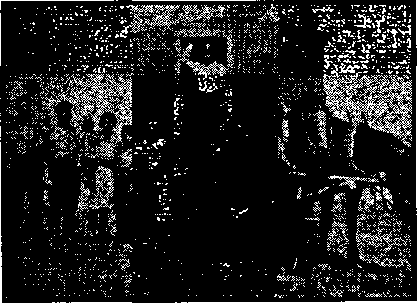
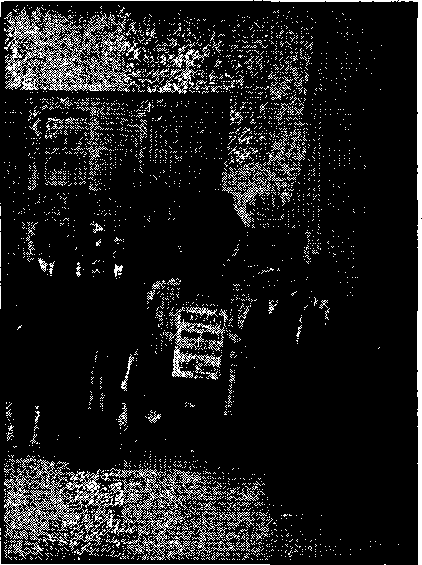
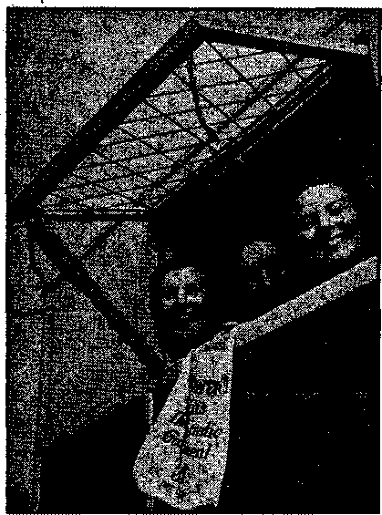
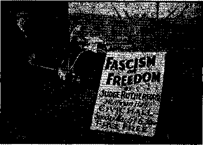
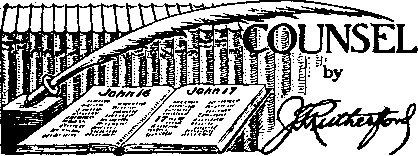

Contents
The Business of Inciting Riots (Part 1)
Above the War the Peace of Religions (!)
Under the Totalitarian Flag
“That Clumsy System of Frustration”
Kingdom News Time of Darkness —; Isaiah 60; 2
Counsel by J. F. Rutherford
British Comment
Convention of Jehovah’s witnesses
An Important Letter to
Published every other Wednesday by WATCHTOWER BIBLE AND TRACT SOCIETY, INC.
117 Adams St., Brooklyn, N. Y., U. S. A.
Editor Clayton J. Woodworth
Business Manager Nathan H. Knorr
Five Cents a Copy
11 a year in the United States
11.25 to Canada and all other countries
NOTICE TO SUBSCRIBERS
Remittances: For your own safety, remit by postal or express money order. When coin or currency Is lost in the ordinary mails, there is no redress. Remittances from countries other than those named below may be made to the Brooklyn office, but only by International postal money order.
Receipt of a new or renewal subscription will be acknowledged only when requested. Notice of Expiration is sent with the journal one month before subscription expires. Please renew promptly to avoid loss of copies. Send change of address direct to us rather than to the post office. Your request should reach us at least two weeks before the date of Issue with which it Is to take effect. Send your old.as well as the new address. Copies will not be forwarded by the post office to your new address unless extra postage Is provided by you.
Published also In Afrikaans, Bohemian, Danish, Dutch, Finnish, French, German, Greek, Hungarian, Japanese, Norwegian, Polish, Portuguese, Spanish, Swedish, Ukrainian; also special Australian edition in English.
OFFICES FOR OTHER COUNTRIES
Enflland 24 Craven Terrace, London, W. 2
Canada 40 Irwin Avenue, Toronto 6, Ontario Australia 7 Beresford Road, Strathfleld, N.S.W. South Africa 623 Boston House, Capo Town
Entered as second-class matter at Brooklyn, N. T.( under the Act of March 3, 1879.
Appetizers
Not What He Thought
At a Washington dinner it was the lot of a pretty little lady to be taken into dinner by an eminent bachelor judge, who was forever worrying about his health.
She managed to keep him entertained until the dessert arrived, when suddenly he laid down his knife and fork and muttered anxiously:
“Madame, I fear I must ask you to excuse me. What I have been fearing has happened. I have suddenly developed a severe attack of paralysis of the lower limbs.”
“Oh, please don’t distress yourself!” exclaimed the lady. “It was my leg you were pinching, not your own!”—Labor.
Not Starting Now!
♦ Sandy McPherson was traveling to Glasgow, and on the way he felt thirsty, so he took out a bottle and drew the cork. Just as he was about to take a taste a fellow passenger in clerical garb addressed him:
“Excuse me, sir, but I am sixty-five years of age, and I have never tasted a drop of whisky.”
“Dinna worry yersel’,” said Sandy, “you’re no’ gaun tae start noo.” .
How Much Down?
One day when Grace was called into her mother’s room to see a baby brother who had just arrived, she exclaimed, “Why, where did he come from?”
“The doctor brought him in,” replied the father.
“Oh, I didn’t know he was the agent for babies,” responded Grace. “What did you have to pay down?” '
That’s So; What Is It?
My small son, for an imaginary reason, ran away from me. I said, “The wicked flee when no man pursueth.” He stopped and asked, "What’s a wicked flea?” There doesn’t seem to be any answer.—A. Griffiths, England.
Twelve Non Compos Mentis
Judge: What possible excuse can you give for acquitting the defendant?
Foreman of Jury: Insanity, your honor. Judge: What! all twelve of you ?
CONSOLATION
“And in His name shall the nations hope.”—Matthew 12:21, A.R.V.
Volume XXII Brooklyn, N. Y., Wednesday, October 30, 1940 Number S51
The Business of Inciting Riots
THE clergy do sometimes come out into the open in their incitement of riots against Christians, but they usually prefer to work through lawless officers of the law or through the newspapers. In Germany, this business is entrusted to Josef Goebbels, one of the world’s master liars.
Anything that will aid the joint cause of Pacelli and Hitler in America is a big help to the totalitarian curse that is overrunning the United States. It is admitted by both Hitler and the Roman Catholic Hierarchy, for which he works, that in all the earth there is not an organization as opposed to their devilish plans as is that of Jehovah's witnesses. All the literature of the witnesses shows it. The imprisonment of all of them in Germany shows it. And the riots in the United States, always at the instigation of the Hierarchy, show it.
Life magazine is entitled to first place in the United States as a help to Pacelli and Hitler. The methods it pursues are efficient and clever. It desires to be of all possible aid to the worst cause on earth; and perceiving that Jehovah’s witnesses are being persecuted by the Pacelli-Hitler clique, it desires to aid in that persecution and to share in the anticipated rewards. Stanley High, in the Saturday Evening Post, is entitled to second place in this category of infamy and may receive some attention in a subsequent issue.
In Life, August 12 issue, are two pages of pictures and comments carefully put together in sueh a way as to encourage resentment and hostility on the part of purchasers of the magazine. To start' with, there is a flaming headline “Jehovah’s Witnesses, Who Refuse to Salute U. S. Flag, Hold Their National Convention”, There is no Hint here that they refuse to salute Hitler’s flag or any other flag, or that their one and only reason is reverence for the commandment of Almighty God, i.e., the second commandment, Exodus 20:4, 5, which the Roman Catholic Hierarchy has conveniently omitted from the ten commandments altogether. (See Consolation No. 480.)
Then follow the pictures intended to encourage riot. The headline “Mob Beat Up Witnesses as ‘Fifth Columnists’ ” is to encourage more mobs to beat up more witnesses, and to shield their comrades, the Roman Catholic Hierarchy and their friend, Adolph Hitler. No so long ago Life pictured him as a lover of children. He must be, having, by now, caused the death of myriads of them.
The first picture here bears the title, “At Litchfield, Illinois, their cars were destroyed and Witnesses were barely saved from an irate mob.” The object of that'legend is to encourage more mobs to get irate and destroy more cars, and thus more fully shield the agents of Pacelli and Hitler in seizing America.
Next is a picture several years old, but useful to Life in the accursed cause to which it is devoted. It is entitled “At Monessen, Pa., their flagless school was closed and Witnesses were crowded into a small jail”. The object, of course, is to bring in one more poke about this new and singular “patriotism”, limited to outward and forced salutes and inward conspiracy respecting all the flag stands for. Also, there is the hope that the 'picture may land others in jail.
Below that is a picture entitled “At Rockville, Md., witness meetinghouse was wrecked by mob that demanded they salute the flag”. Nothing said of the fact that the riot was first threatened by the chief of police, and was then led in person by two of his subordinates, and finally was endorsed by the clergy of the community, who are still, under difficulty, trying to work the old “torture” and “purgatory” rackets. The picture shows the reverent sign “Jehovah Is Our God” (a Scriptural expression—Psalms 90:17; 99:8; 106: 47; 113:5; 122:9) torn into three pieces. A
hint to other mobs as to what to do to the name of Jehovah.
The fourth picture is entitled “At Kennebunk, Me., meetinghouse was raided, set afire on charge that witnesses shot two men”. Nothing said of the fact that the raid was threatened and protection asked in vain of both the police and the governor; nor that the house had previously been stoned; nor that the night of the raid seven cars had threateningly patrolled the neighborhood; nor that the car that stopped at 2:30 in the morning was loaded with stones, and that the buckshot was fired in self-defense. Life's object is to get more meetinghouses raided.
Fifth' picture is of Judge Rutherford’s noble and kindly face. Beneath it Life was mean enough to put the word “Judge” in quotes. To please Pacelli and Hitler this was really necessary. That is the way the Roman sect wanted it done.
Even more offensive than the titles to the pictures are the provocative statements, which in forty lines'of type managed to put in more than twenty abusive expressions, the object of every one of which was to get more religionists out as rioters. It was a fine piece of work for the Devil, and anybody admiring the Devil would be hard put to it to see how Life could have done a better job for him, for the Roman Catholic Hierarchy, or for Hitler. In other words, these two pages of pictures were designed to do all possible to get the witnesses in bad with the public, and to keep right on with the riots.
Everybody knows that beards are out of style, and so the Hierarchy’s newshounds find pleasure in using so small an item as this to try to bring reproach upon God’s people. Thus, in the Chicago Herald-American, Elgar Brown begins a lengthy article about Jehovah’s witnesses with this sentence: “Twenty women and five long-bearded men, all members of the religious sect known as Jehovah’s Witnesses, today enthusiastically refused to salute the American Flag in Judge Victor Kula’s Fillmore'st. Court.” One of the men pictured did have a beard; but what of it? There is no difference whatever, in respect to their physical appearance, between Jehovah’s witnesses and other. people except, as has often been remarked by managers of great auditoriums, that the witnesses appear more intelligent.
Newsweek covertly resorts to the same scheme by picking up one bearded man and ■ making him the center of a. group entitled “Jehovah’s Witnesses members listen to Judge . Rutherford’s address.” In this instance News- ' week entitled its story, sneeringly, “Rutherford’s Flock.” Jehovah’s witnesses are not the ’ flock of any man. They are the sheep of the great Shepherd, Jehovah God, and of the Un- ■ der-Shepherd, Christ Jesus,
Country newspapers help along the work of the rioters. Thus the Northern Virginia Daily, Strasburg, Va., said of Jehovah’s witnesses that it had been “proven by the Dies Committee to be connected with the dissemination of totalitarian propaganda in this country. It is financed and its teachings inspired by the foreign agents Hitler and Stalin.” It just happens that there is not a word of truth in either of those sentences. In a four-column story, putting the facts before the public, Kenneth Porter, professor of history at Vas- . sar College, said:
Jehovah’s witnesses may be mistaken and are undoubtedly fanatical in their method of displaying their convictions, but they are not Communists, Nazis, or “fifth columnists”. A German, recently in a concentration camp, to whom I talked on the ship which brought me from the British Isles to the United States last September, said this of them. When I asked if any group of prisoners in the concentration camp were treated better than any other groups, he replied : “No group is treated any better than any other group, but one group is treated worse. That is the Jehovah Is witnesses.” “Why?” “Because the others realize that they must conform to the Nazi discipline, but the Jehovah’s witnesses will not yield one fraction of an inch. They will not shout ‘Heil Hitler!’, they will not give the Nazi salute to the swastika, they will not sing the Nazi songs—and so every day, and sometimes several times a day, they are mercilessly beaten—but they will die rather than give in.”
Mr. Porter’s statement as above was courageously published by The Kiowa County Signal, Greensburg, Kansas, a week after that journal had been misled and it had been accusing Jehovah’s witnesses of being “a German organization in New York City”. It takes courage to publish the truth after a falsehood has been published on the same subject and directly contrary to the facts as they exist.
Having suffered the worst of any people in Germany, Jehovah’s witnesses probably know more about the horrors of the Pacelli-Hitler regime than any other people in the world. In
Theocracy publishers, London tail-grass squad.
Two feet of smiles.
the “Public Forum” of the Observer, La Grande, Oregon, C. E. Abrahamson said:
A few of these good people managed, to escape from Germany and Poland and Czechoslovakia into Switzerland and France. From these points of vantage these people have been forwarding to their friends in England, Canada and the United States all the information they could concerning Hitler’s terrible crimes in occupied European territory.
Consolation, the official journal of the “Jehovah’s witnesses” sect, has published over a thousand book-sized pages of detailed information concerning Hitler’s unparalleled, criminal persecutions in occupied European territory. In fact, it is one of the few publications in the United States that has gone into the subject thoroughly.
None of these people, either in Europe or America, have ever given a thought to any possible compromise of any kind with Hitler or Nazism. They are, in fact, if not in their devout conscience, Hitler’s bitterest enemy.
The foregoing is confirmed by a reader in the Memphis (Tenn.) Commercial Appeal, who said: “Did you read an article in the Saturday Evening Post by someone who had escaped from a detention eamp in Germany? He said Jehovah’s witnesses stood the harsh life better than any others.”
No one has ever accused the Bundists of not
OCTOBER 30, 1MO saluting the flag, and no one has ever accused the subjects of the Roman Catholic Hierarchy of not saluting the flag, and yet both of these organizations are definitely committed to the destruction of the American system of government. It is a strange commentary on the conduct of those sworn to the enforcement of the law that they do not remember that Jehovah’s witnesses were working in America more than fifty years before the existence of either Fascism orNazism. It is a strange thing also that the same individuals do not remember that Jehovah’s witnesses were the first to warn the American people against the movement now wrecking Europe. It is a strange thing also that those same persons do not remember that the literature of Jehovah’s witnesses is the first literature banned when any country comes under totalitarian rule. This was true in Italy, Germany, Russia, and all of Europe that is under German control.
When the Hierarchy wants to pull off anything particularly raw in the United States it tries it out first in Canada. If the politicians there fall for it, it is a relatively simple matter to persuade the politicians of the United States
to follow their example. The clergy are always at the bottom of it. That was the case in 1918, when the work of Jehovah’s witnesses WM suppressed at the instance of the clergy, first in Canada, then in the United States. The same thing was done in 1933, when Hector Charlesworth, Canada’s impossible radio censor, put Jehovah’s witnesses off the air in Canada at the instance of the clergy. The same crowd tried to do the same thing in America, but made a lamentable failure, succeeding in bluffing only about twenty-five stations out of three hundred. The Catholic Press still delights to lie about having put Judge Rutherford off the air altogether in the United States, which statement is false. This is what is commonly known as “Catholic truth”.
At the instance of the clergy, the organization of Jehovah’s witnesses in Canada was outlawed July 4,1940, for the specific reason that it teaches that man-made law is not recognized if it conflicts with the Divine law. That sounds like the clergy. Indeed, in the Exeter (N.H.) News-Letter the “Rev.” Eldin J. Prescott made the statement that Jehovah God, whom Christ Jesus claimed as His father, “was a war God and about as immoral as any of the ancient gods of what we call paganism.” That bird has the idea that man makes his own God as he goes along.
Results followed in Canada right away. The next day J. F. Letellier, of Montreal, a storekeeper, was arrested because he had in his possession thirty-eight thousand booklets proclaiming God’s Kingdom as the hope of the world. It was “feared” that these booklets might “cause heated discussions”. Isn’t it too bad that people should be so heated that they would discuss things among themselves? That might result in their learning something, and this, emphatically, the clergy do not wish. Letellier was sentenced to six months in prison.
A few days later nine of Jehovah’s witnesses were given a month in jail at Rimousky, Quebec, with the threat by the magistrate, J. F. Bugaud (guess his “church”), that if they did not renounce and sign a renunciation of their ' faith at the end of thirty d iys they would be imprisoned for the duration of the war.
Imagine the joy with which the “church” reports matters of this,kind. Knowing full well the promise of the Lord that all the godly shall shffer persecution, and having in America no persecution themselves whatever, the Florida Catholic reports these Canadian persecutions as a “cracking-down of the Canadian police on the outlawed Jehovah’s witnesses”. Probably Annas and Caiaphas talked that way about the “cracking-down” of the Jerusalem police on Jesus of Nazareth.
At Port Arthur, Ontario, police raided the Kingdom Hall of Jehovah’s witnesses, seized two truckloads of Kingdom literature and phonograph records, and then raided the homes of Jehovah’s witnesses all over town, stripping them of the literature of the Kingdom.
At Sarnia, Hamilton, Stratford, Brantford, Fort Erie, and elsewhere in Ontario, similar scenes were enacted. The names of some of the faithful ones who are now “prisoners of the Lord” in Canada are Carl Steinoff, Edward Jones, Joseph Meidenger, and Edward J. Bamb ridge. May the God of all comfort be their peace in their hours of darkness!
So far as is known the Canadian police did only what the law required them to do, but America has many police who have absolutely no. regard at all for the law, neither the law of God nor national laws, state laws, or even the laws of the city in which they live. Take that case at Rockville, Maryland. There the police warned Jehovah’s witnesses of their intention to break up their meeting, and counsel for the rioters in open court offered to prove that the police acquiesed in the action of the mob. Though the hall was totally wrecked and Jehovah’s witnesses were pushed down the stairway, and two of them arrested, and others were ordered out of town, it took a jury only thirty-five minutes to approve the action of the mob and their so-called “red-blood Americanism”.
Oddly enough, these very police of Rockville, who planned and executed this riot, are themselves accused of failure to salute the flag at Tacoma Park on Independence Day. Their failure to salute the flag as it passed so astonished Frederica F. Carlton, secretary of the William Frederick Redmont Auxiliary, Veterans of Foreign Wars, that she wrote a letter of complaint to the County Board of Montgomery County, Maryland, about their shocking discourtesy to the flag. It was this same crowd of discourteous police officers that led the riot in Rockville. Jehovah’s witnesses conscientiously believe it is a violation of Exodus 20:4,5 for them to salute a flag.
Commenting on these conditions Zarathustra, in the Washington A*ews, says pointedly, interestingly, truthfully and comically:
One is inclined to believe that the Witnesses are not being persecuted because of a lack of patriotism and Christianity, but because they have too milch of it and are addicted to telling the truth at a time when organized religion and the Government would prefer to have falsehoods or silence. Rockville merely proves that “the American way” can be Fascism under a different label.
At this point don’t forget the part the newspapers play in matters of this kind. The police and the newspapers work together to do the will of the clergy. Thus at Marshall, Illinois, the Park County Democrat, eager to defend riot, told about “a group of enraged Marshall citizens” led by Melvin Behner, who ran out of town a half-dozen men and women who, according to that lying sheet, “were selling and giving away a paper called the ‘Watch Tower’, which bitterly assajjs the practice by American schools of saluting the flag.” No such material ever appeared in any Watchtower publication.
It seems to be the idea of a lot of half-educated and half-baked police officials that they can order out of town anybody thpy choose; and one can but wonder just what Will happen sometime when some of these officials order out of town some real American who has made up his mind in advance that his conduct is going to be governed by law and not by the whims of some mistaken official.
County detective Merle E. Dickinson ordered Jehovah’s witnesses not to do any more work of serving God in McKean county, Pennsylvania. He had as much right to do that and as much ability as if he ordered a star to cease from shining. At Waynoka, Oklahoma, Mayor W. D. Cope and the city council passed an ordinance directed particularly at Jehovah’s witnesses. Mayor Cope admitted this, and also admitted that he did not know that it would stand up in court “but an Alva lawyer wrote it for us and we can try it”. Mr. Cope’s, ordinance is no good and will be ignored.
At Bethany, Oklahoma, the same stunt was considered and Mrs. Ruth Hines, city clerk, said, “We don’t want the Witnesses around here, and we’ll run them out of town if necessary.” Ruth is all wet.
- At Las Cruces, New Mexico, twenty-three of Jehovah’s witnesses, eleven of them women, were also ordered out of town by the city police judge, Albino Apodaca.- Guess Apo
OCTOBER 30, 1340 daca’s “church”. By advice of the city attorney, E, G. Shannon, who still seems to have some use 'of his brain, charges against these witnesses were withdrawn; so it should be understood that Apodaca was merely speaking for publication, and probably to please the “fatheri’-confessor who gets part of his income. The name Las Cruces means “the 'crosses”.
Murphysboro’s a happy name. In this city, on June 27, both the mayor and the chief of police stated that the witnesses would be run out of town the moment they appeared in their fair city, the reason given being that the witnesses had been attacked at Litchfield and their cars destroyed. This is quite an interesting reason for depriving Americans of their rights, and also for presuming to take away from Christians responsibilities placed upon them by Almighty God. The same paper the same day contained a letter from Edward L. Adams, Jr., probably a lawyer. In his letter Mr. Adams says that he does not like Jehovah’s witnesses, but, amongst other things, he made the following' statement, which is good for any mayor to consider:
There is no Jaw nor ordinance under which such an order can be enforced, and if such a law were to be placed on our statute books the courts would very likely knock it out as unconstitutional. In fact, there are numerous laws now on the books which are designed to protect our citizens from such arbitrary acts. In defiance of these laws, which he is sworn to uphold, our mayor has issued a decree attempting to bar from this community certain citizens of this country.
Five days later, in this same newspaper, the mayor of Murphysboro and his thief of police had to see the following from Grace C. Hall, of Carbondale, regarding a fellow mayor and fellow chief of police whom they doubtless held in high esteem. Miss Hall, referring to the' prowess of this other mayor and chief of police, said:
Having been one of the women mentioned, naturally I am interested in seeing these accounts accurate. What I mean by this is that I went to West Frankfort to secure the release of three men being held there in jail without any charge having been preferred against them and two of which had received severe beatings at the hands of the police there and after having received the promises from both the mayor and chief of police that they would be released to me. Upon my arrival at the jail, I was placed behind the bars and held without being permitted to communicate with anyone, not even
7
the police, for over 16 hours without sanitary supplies of which I was much in need.
Four days later the Murphysboro mayor and the Murphysboro chief of police, who were going to run Jehovah’s witnesses out of town the next time they appeared in the city, had to see in the same newspaper the following interesting announcement, and it must have been as hard for their “father”-confessor as it was for them. Also, it shows that the publisher of The, Daily Independent is a good American scout, “all wool and a yard wide; warranted not to rip, tear or ravel.”
Jehovah’s witnesses, 906 Lake St., Watch Tower Bible study Saturday 7 p.ru. Purpose of study; To increase the knowledge of the Word of Truth that all may be better prepared to be obedient to the requirements for those who strive to do right; to better understand the love of Jehovah for all who art; obedient to His will and to understand the message of the Kingdom. “In the days of these kings shall the God of heaven set up a kingdom which shall never be destroyed; and the kingdom shall not he left to other people, but it shall break in pieces and consume all these kingdoms, and it shall stand for ever.”—Daniel 2:44.
The mayor and the chief of police of Murphysboro also had to see the following statement from Arthur H. Taylor, M.A., published in the “Editor’s Mail Bag” of the same able paper, The, Daily Independent :
“Saluting the flag is a patriotic gesture to many of us, but it is a gesture only, not love of country in itself. No doubt many do it, especially in times of stress, who love themselves so much more than their country that they are willing to graft and do many other unpatriotic, things. And to slug people contrary to law is to slap our Jaw and country in the face, a far worse offense against true loyalty than refusal to make a patriotic gesture that, to many means nothing.
Theocracy publishers
Theocracy publishers, Newquay, Cornwall, England
This all had its effect and finally the mayor got down off his high horse and showed that he is a pretty good American after all. He announced publicly that he had reason to believe Jehovah’s witnesses were again coming to town shortly; that he suggested citizens should extend to Jehovah’s witnesses every courtesy extended to any other visiting Christian group ; that a thorough check-up showed Jehovah’s witnesses have no activity that could be construed as of subversive or traitorous tendency ; that it was his business to keep the peace, and now that Jehovah’s witnesses have been found OK they must be treated OK. So it’s all OK after all in Murphysboro, All of which shows what a good newspaper can do and what an awful lot of rotten ones there are elsewhere,
Self-defense is legal, both by the law of God and by the law of man, and when officers of the law turn into anarchists and show a complete unwillingness to protect citizens in the exercise of their lawful rights, then the citizens have to fall back on their right and do the best they can to be wise and kind and
Theocracy publishers in London trailer camp — sardine squad
just under whatever conditions come up. In The- Nation, IL Rutledge South worth, quoted at length by Elton Groves in Consolation No. 547, speaks of the atrocious conduct of many officials thus:
One of the most disturbing features of this wave of violence is the complete unwillingness of local law-enforcement officers to protect the Witnesses. In manj’ eases officers of the law have been active participants in the outrages.
The courageous “hitting-from-the-shoukler” Baltimore Sun uses language that even this magazine would hesitate to utter on its own responsibility, but read it anyway. It is from the editorial pen of Frederic Nelson, under the caption “Liberty, Not Litter”. Mr. Nelson says:
THE RECEN'T tendency of the Supreme Court to abandon the individual to the wolves seems to me a particularly dangerous symptom, and the increasing abuse of this particular seet suggests that local witch hunters from coast to coast think they have got a judicial green light from on high for procedure with the ax handle and the harness strap.
Quite in line with this suggestion that regardless of the law any judge now has a right
OCTOBER 30, 1040 to do what he pleases to Jehovah’s witnesses, Judge J. I). Cook, of Texarkana, Arkansas, not only fined one of Jehovah’s witnesses, W. M. Manning, $100 and costs and sentenced him to thirt.y days in jail for circulating literature which he had a perfect right to circulate, but sneeringly referred to the statement of the Department of Justice as the sentiments of “wheel-chair artists in Washington”. This case was, of course, appealed. Judge Cook should get a job somewhere off on a backwoods farm. The New Jersey Supreme Court has just decided graciously that it does not have the authority to interfere with the preaching of God’s Kingdom.
Many newspapers have made much of an act of self-defense in Maine where one of Jehovah’s witnesses, to prevent the slaying of his companion with a bar from an automobile spring (which companion is new in the truth, was immersed at Detroit), shot a man (who later died) described slobberingly as “a deputy sheriff and a shell-shocked victim of the World War”. In the first place, the state of Maine had no business to make any man a deputy sheriff w'ho is not in full control of his mental faculties, and if the man shot did not have any more sense than to start to murder another man because in a kind and considerate manner the other man asked if he could play for him a phonograph record about God’s kingdom, then the result is what, is to be expected.
Considering this subject of the ease with which some officers of the law yield to the mob spirit, read the following copy of a true statement submitted to Consolation, prepared by
Useful, four-legged information marcher, Wolverhampton, England
9
-Stanley D. Belden, attorney at law, Walters Building, Cushing, Oklahoma. Every rightthinking American will be glad to know'that Mr. Belden is now going after these anarchists in uniform and will do all that is legally possible to see that they get in court the justice they refuse to give out of court. Mr, Belden says: ■
On Sunday, July 7, T was asked to represent a man by the name of Nichols who was of the faith of Jehovah’s witnesses. ] was told that be was in the Guthrie [Oklahoma] jail, and that, no attorney in Guthrie would represent him because of the public sentiment existing in Guthrie. After debating the mutter most of the. night, though not believing as do Jehovah’s witnesses and though their literature condemns certain of my ideas, still, I, ■ believing as Voltaire said,
“1 may despise the thing yon say, hut. will defend to the death your right to say it,”
and believing that everyone, no matter with what he may be charged, has a right, under the Constitution and the law of the land, to a fair trial and ths right to make a defense in the courts of the land, and believing it my duty as a lawyer under the oath that I took when 1 was admitted to the bar, consented to take this case.
I went to Guthrie and there, before the police judge, defended both Mr. Nichols and Mrs. Sprague. They were charged with peddling without a license. When we gave notice of appeal, two men stepped forth to make the bond. One of the Officers asked one of them what he was there for. He said, “To help make bond.” They said, “In yon go,” and put him in jail. There were a number of officers and Legionnaires. They rushed me and demanded that I salute the flag.
I stated that I had no objection to saluting the flag, but asked to make a statement. They shouted “No”. “Any lawyer that would represent the sons of h---- is just as bad as they are.” They pushed
and shoved me around, took my wallet, my watch and keys and jerked my brief case from my hand, Baa tiering some papers which I held in my other .hand, and put me in jail. I was later fingerprinted and asked a lot of questions, with a number of officers sitting around making remarks that the Legionnaires would tear the jail down that night and just what they would do.
I was put back into jail. Sometime between twelve and one o’clock at night, Fred Streeter, chief of the police, said he wanted to talk to me and took me from the jail into another room. He told me that I could go but that there were Legionnaires in the City Hall and he could not guarantee my safety. He stated that they would put me on a bus but that they would not guarantee that the Legionnaires would not take me off. Or, he said, they would take me out to the city limits and drop me off there. I told him I would call friends to come and get me; but he said that would be dangerous.
He said, "I want you to know that I will not give you protection; for if the Legionnaires get hold of you there will be bloodshed, and I will not shed any of their blood to protect you, because this is my home and, my job and I have to protect it.”
I told him T would wait until morning to leave, but he said he preferred that I not do that for fear of what the Legionnaires would do. He again stated he would not protect me against them. He finally, about one-thirty in the morning, told me he would take me to Coyle; which he did. ■
I often salute Old Glory and I am willing to do so at any time, but only when I am free to do so of my own will. For me to have to salute the flag at the command of a mob armed - with guns and billyclubs would have been cowardly on my part and a desecration of the very principles for which I believe the flag to stand—“liberty and justice for all,”
I am willing to set aside from seven-thirty to eight o’clock each and every morning, at which time I will salute the flag in my office with members of the Legion— one and all—and repeat the oath of allegiance, only asking that they mean it when they repeat “liberty and justice for all”, and for every paragraph of the Constitution, the Declaration of Independence, and their preambles, and the Bill of Rights, that they will memorize, I will memorize two, until we have committed to memory all of them in their entirety.
But I refuse to insult it by saluting it at the command of a mob. '
To do so would be an insult to it.
Love for the flag is not to be gotten that way. The former national commander of The American Legion, Harry W. Colmery, said:
. “Americanism, true if merman ism, means acceptance of and adherence to all of the principles and institutions of the American form of government. We cannot accept only those winch coincide with our own individual point of view and violate those which do not; and we must not resort to force to suppress persons or groups whose opinions differ from our own. That is the very essence of un-Americanism. The Constitution of the United States guarantees freedom of religion, freedom of speech, freedom of the press and the right of the people peaceably to assemble, and it declares that Congress shall not make any law ■ prohibiting the free exercise of these sound principles. These are the most- American things in the Constitution. Without, these wise provisions, we would have no democratic government: indeed, history tells us we would have no United States of America.—we must not . deny the right of free speech or peaceable assembly to any person or any group, not even to those whose principles we despise.”
1 subscribe to these principles. This is not Germany, but America, and I refuse to help Hitler-izc it.
(To he continued}
UI TKMJ CULTU IOWT MUNK A erm MMn VAUWONm*. SI CAUCNI A Mom, UN NAMIN. UN FASMU*. VN PUHI CATHOLIMS
The chaplain of any confession playsan important role in the war. He exhorts the souls, calms the pains, comforts and brings consolation. In his godliness he exalts the most noble virtues. United in the same ideal,the representatives of the differ
ent cults fraternize and help one another. On account of the strange circumstances, agreement has been made to delegate from one religion to another the authority they hold from God. and so a rabbi or a pastor can, for example, in the urgency of a
battle, receive the confession of a wounded Catholic and can give him by procuration a valuable absolution. A splendid fusion of common Ideals.
[Translation of the French comment. Notice the big cross on the French Protestant cleric.J
♦ If we’re to send an ambassador to the pope, then why not send one to the Protestant churches, to the rabbis, to the Mohammedans, and the other religious heads or institutions? Why select the Catholic church for this special treatment? Baek in 1867, under the administration of President Johnson, the LT. S. Government decided to stop the dangerous and offensive practice of sending ambassadors to the Vatican. The step was taken by the simple ' expedient of having Congress fail to appropriate money for such a purpose. Since then we have followed the sane, sensible policy of paying official heed to no particular religious organization, which, needless to say, fits better into the spirit of our Constitution and traditions.
Needless to say, the explanation offered—to the effect that this is done in order to put the American government close to the pope’s peace policies—can’t be considered as anything short of the sheerest hypocrisy. Since when has the world been given concrete evidence that the Vatican is really interested in peace? Did the pope show a keen love for peace when he blessed Mussolini’s war banners as that massmurderer sent his Fascist army into Ethiopia, where 250,000 men, women and children were killed in cold blood? Catholic, priests accompanied Mussolini’s troops, and everything was done in order to help the blackshirts destroy the resistance of a people that belonged to the world’s oldest “Christian” sect—the Coptic church. And how much love for peace did the pope show when he gave his material and moral support to General Franco’s Fascist rebellion against Spain’s Loyalist government? How anxious was the pope for peace when Doll fuss, Austria’s little dictator, slaughtered 1,500 Socialists during the Vienna uprising against clerical Fascism? The Vatican is always for peace when the ends of reaction can be served, but once let true liberalism and democracy show themselves and you’ll always find the Vatican ready to bless any force that conspires to destroy them, so long as it’s done in the name of Catholicism and Fascism.
We must ask the president what it is he’s recognizing when he established diplomatic relations with the Vatican. Is Roosevelt giving special recognition to a set of religious principles? If the answer is that Roosevelt is seeking to have the U. S. Government act with a view to co-operating along religious lines, then he is guilty of a grave attack on true Americanism, which opposes such co-operation. If Roosevelt prefers, instead, to extend recognition to a temporal State—Vatican City—then he is guilty of placing the American people in a position that is disagreeable to their traditional dislike for special, religious States. We send no ambassadors to Mecca in order to recognize the temporal headquarters of the Mohammedans. We send no ambassador to Palestine in order to have dealings with the Zionists in Jerusalem. We send no delegate to hold diplomatic or political meetings with the leaders of the Mormons. We send no ambassador to the Negro miracle workers in Bantu. Then why to Vatican City?
—American Freeman.
“That Clumsy System of Frustration”
♦ From the minor tragedy of Jewish religion we turn to Christianity [religion—Ed.] in its most successful form of organization, the Roman Catholic Church. Successful as it is, this organization is nevertheless fantastic. Its central control rests with a close corporation of priests, many Italians. In the Vatican, supported by a handsome subsidy from the Fascist government and contributions of the faithful, the Holy Father steers the Church through the pitfalls of this world. He has had the medieval education of a priest ; his advisers have worn the mental blinkers of the devout and, just as far as they dare, they influence the political life of the world, according to their limitations and prejudices. In all the democracies the “Catholic vote” obeys the tortuous wisdom of these scheming old anachronisms. Here tyrannies are blest, and here revolts are fomented. The devout in France or Britain, for example, must support the Franco pronunciamento to the infinite injury of their own countries.
Some young Roman Catholics hope to see the re-establishment of the Holy Roman Em-, pire under the emperor Otto with its headquarters in Vienna. This, they say, would fol
low the social legislation suggested in the famous encyclical of Pius XI. This probably seems fantastic to anyone but a young Roman Catholic, but if we want to see what sort of a society it would produce we have the object lesson of Eire. ,
In Eire censorship of books and controlled education have produced already a first crop of young men as blankly ignorant of the modem world as if they lived in the thirteenth century, mentally concentrated upon the idea of bringing the Protestant North under Roman Catholic control in the sacred name of national unity. The tension of surplus youth is increasing; hence the I.R.A, bombings of recent months in England carried out by young priest-taught men who purify their souls at mass and confession before they leave a bomb in a London underground station.
The Roman Catholic Church, that clumsy system of frustration, that strange compendium of ancient traditions and habit systems, is certainly the most formidable single antagonist in the way of human readjustment.—-H. G. Wells, in “The Fate of Homo Sapiens”, as published in the London Picture Post.
♦ At Habakkuk 2: 20 and Zechariah 2:13 the prophets, speaking for Jehovah, and which prophecies are in course of fulfillment, say: “The Lord is in his holy temple: let all the earth keep silence before him.” “Be silent, 0 all flesh, before the Lord: for he is raised up out of his holy habitation.”
Commenting on these scriptures the April 15, 1940, Watchtower, page 117, paragraph 16, says: “Jehovah now sends his witnesses among the people to speak his message, and thus the Lord Jesus by his servants is delivering the command to the people from the Most High to keep still and listen. All should keep silent, and not attempt to speak against Jehovah or against his message now, and thus to prevent others from hearing. The message of Jehovah to them is to cease spreading propaganda in support of Satan’s rule.”
The enemy of The Theocracy continues to charge God’s people with carrying on a work of propaganda. On the contrary, our chief enemy on earth, namely, the Roman Catholic Hierarchy, are' the real propagandists! Referring to the word “propaganda”, as found in any reliable dictionary, we learn the following: “1. (R.C.Ch.) A Congregation of Cardinals established in 1622 charged with the
OCTOBER 30, 1040 management of missions. The College of Propaganda, instituted by Urban VIII (16231644) to educate priests for missions in all parts of the world.” (This is from Webster’s revised by Noah Porter, D.D., printed by Merriam Co., Springfield, Mass., 1902.) “A. Society at Rome charged with the management of missions of the Roman Catholic Church.” (The New Universities Dictionary, issued by The World Syndicate Publishing Co., New York, 1918) “1. (R.C.Ch.) A congregation of cardinals charged with the management of missions, b. A college instituted by Urban VIII to educate priests for missions.” (Webster's Collegiate Dictionary, third edition of the Merriam series, 1916)
Corroborating these definitions history shows that the Jesuits of the Roman Catholic Hierarchy are the chief disturbers of the peace of nations and peoples by their devilish propaganda. And even now, when the truth concerning The Theocracy is shining so brightly, they refuse to be silent and listen to what Jehovah has to say through His witnesses, but continue to disturb the peace of the world.
—G. F. W. Thomson, Vermont.
♦ We see one-party rule crushing all opposition ; 1,000 newspapers abolished, all others State-controlled; the radio and movie State-dominated ; the church in handcuffs; all education regimented from the kindergarten to the university; labor unions destroyed, their treasuries confiscated; the health of her people cracking under the intense Spartan discipline and the neglect of political doctors; the lawyer no longer free to defend his client, but under a greater obligation to the Stated the courts packed; justice the tool of the party boss; hours of work lengthened; wages decreased; strikes abolished; credit in the hands of the State; insurance largely run by the politicians; freedom to marry restricted; illegitimacy made honorable; science, art, music and the theater prostituted to the preconceived notions of party and race; bachelors taxed to procreate “cannon fodder”, yet childless marriages increasing, marking a silent rebellion; every alleged father made responsible for bastard children; compulsory labor service (serfdom to the State); “Hitler elections” 99 percent pure; public office made the privilege of a new caste; religion paganized. ‘■The Prussian soldier is the primal cell for
13
the building of our complete being. . . . We seek the total destruction of dishonorable democracy which ignores the foundations of race”; the party line, which is the discipline of the army, carried into eivil life. '
We see women again thrust back to Kirche, Kueehe, Kinder (church, kitchen, children) ; criminal punishment not only for defined offenses but “for acts which deserve punishment according to the sound conception of the people”, i.e., government by the tyranny of men, not by the rule of law; ex post facto justice, i.e., punishment for an act not a crime when done; arrest without warrant and imprisonment without trial; search and seizure at any time and for no stated reason; no independent jury system; and finally the Gestapo and political murder.—Smoke Screen, by Samuel B. Pettengill, page 74.
♦ The latest motto of It^ly is “Compassion is the negation of Fascism”; which is interesting for several reasons. First, it preceded by two weeks the announcement that 96 percent of priests in Italy faced the “call to service” under the command of the sleeping-car hero. These priests, however, will not need any bayonets with which to rip up their fellow men. If called up, the announcement explains, they—
would be called up to serve in hospitals as assistants to physicians and in clerical capacities as well as chaplains.
This is all regular. Let George do the dirty work and run the risks, but let the clericals have the soft jobs, the easy ones and the well-paid ones. .
* The second point is set forth below; but these statements would mean not one thing to Mussolini or the gangsters that are backing him up, and this includes especially the horsecollar gangsters booked for the soft and well-paid jobs:
And Jesus went forth, and saw a great multitude, and was moved with compassion toward them. —Matthew 14:14. *
But when he saw the multitudes, he was moved with compassion on them, because .they fainted, and were scattered abroad, as sheep having no shepherd.—Matthew 9: 36.
Then Jesus called his disciples unto him, and said, I have compassion on the multitude, because they continue with me now three days, and have nothing to eat : and I will not send them away fasting, lest they faint in the way.—Matthew 15:33;
So Jesus had compassion on them, and touched their eyes: and immediately their eyes received sight, and they followed him.—Matthew 20:34.
And Jesus, moved with compassion, put' forth his hand, and touched him, and saith unto him, -I will; be thou clean.—Mark 1:41.
And when the Lord saw her, he had compassion on her, and said unto her, Weep not.—Luke 7: 13.
And he arose, and came to his father. But when be was yet a great way off, his father saw him, and had .compassion, and ran, and fell on his neck, and kissed him.—Luke 15: 20,
♦ The Loyalists told the truth throughout the war. This was bad tactics, but they were not instructed in the modern war code by Germans and Italians, as was Franco. The Loyalists ' never hid the truth of the murder of priests and nuns and th,e burning of churches in the early days of the “rebellion”. Franco took the army and police with him, and there was chaos for a few weeks in which atrocities were committed. But the Loyalist government told the truth when it claimed that it had never killed a priest or nun or burned a church. Such violence as occurred was the work of elements that got out of hand, and when order was restored, crime was punished. Franco, on the testimony of great Catholics (Bernanos, for one), deliberately and cold-bloodedly murdered his opponents. .
Every morning during the war Franco attended “Holy Mass”, and every night he commended himself “with fervor to his guardian angel and the Virgin Mary, after approving the reports of the day’s operations, in which he triumphantly recorded the number of enemy corpses picked up on the battlefield”. It is estimated that 1,200,000 persons were killed in the war, and since Franco had ten times as many planes as the Loyalists, ten times as many guns, and more than ten times as many bombs, shells, tanks and other deathdealing instruments, it is most likely that Franco, who started the war, killed elose to a million persons. In May and June, 1939, his tribunals were shooting one person every nine minutes; thousands had been executed, the arrests were at least a million, according to Fascist official admissions: but Franco■■ went to the church of Santa Barbara, “delivered his sword to God and gave thanks to God for his victory over ‘the enemies of Truth in this Century.’ ” [Carney, New York Times, May 21, 1939.] —The Catholic Crisis, by George Sel-des, pages 253, 254.
(To be continued) ’
INFORMATION far ill (MPians of toad wIM toward Almighty Gad. R&JUtlTON It « tntrt and 0 racket OOP’S TRUTH •hJtltfR' and ttrangthena tha upright.
. , . the government shall be upon his shoulder; and his name ahall be called Wonderful Counsellor. , , , of the increase of hu government and peace there shall be no end . . . The zeal of JEHOVAII of hosts will perform this.—Isaiah 9:6,7.
DEVOTED to tha prln-oipiet of Juttleti truth, ttjulty klndnea* at tkampllflad in tha apta and Baying* of Tha Creator of the Unlvaraa <nd of Hl* Kino C hr lot Jeau*.
Vol. 1
New York City - July 1940
No. 6
HYSTERIA of mob violence has seized upon many parts of the land.
Harmless, persons are assaulted because they decline to obey the demands of fanatical persons Their houses are broken open, burned to the ground; they are thrown Into prison; they are driven like dumb brute? through the heat; forced to drink castor oil. tarred and feathered. The mobs are Incited to do this work by religious leaders and others who claim to be great patriots of the nation. Engaged in these mobs are public officials who. because of influence exercised over them by the Roman Catholic Hierarchy, and because of their desire for political advantage, violate their oath of office, ill-treat and abuse American citizens who are doing no wrong, and wink at wicked acts of Nazis, “fifth col-umnl&ts,” and others who engage In a conspiracy against the government. This class Is for lawlessness, wickedness, violence.
On the other hand there is a class of people who are honest and Sincere, and who believe rn Almighty God and His Son, Christ Jesus, and are In favor of freedom of speech and freedom of worship, regardless of who the person may be or what his belief may be, These seek the welfare of the people In general and want to know the meaning of the
SIGNS OF THE TIMES
Total wars, threats of famine, millions of refugees, destruction' of democracies, “disl rests of nation?, with perplexity," ’'men’s hearts failing them for fear” I What ha.* RELIGION to. say about these signs of the times?
Facts piling up hourly show7 that "Christendom’s” greatest religious combine, the Roman Catholic Hierarchy, is determined that the whole world, including the T’nlted States of America, shall go totalitarian this year, 1940. Even sincere devout Catholic persons are horrified jjs they learn daily of faithless, treacherous acts of high Catholic leaders and other religionists. For example:
In Italy, in Germany, Hierarchy arch bi a hops, monsignors, and other church represent al ives publicly bless and pray for "success” of the* totalitarian war machines. In Britain the same Hierarchy’s lone cardinal joins contrariwise in blessing and praying for those resisting the totalitarian aggressors, In the same breath that British cardinal commands silence upon Catholics who dare to demand that their pope excommunicate a "son of the Catholic church", Adolf Hitler. Throughout Hitler’s domain the Hierarchy bishops publicly celebrate his recent victory over Belgium, Luxemburg, The Netherlands, and France.
A few years ago German bishops asked the same Hitler to destroy Jehovah’s witnesses. lie promptly need' ed that * request and issued :l pro no u neem ent condemning Jehovah's witnesses, as follows : 'I dissolve their organization in Germany : their property I dedicate tq the’people’s welfare; I will have all their literature confiscated: 1 do not tolerate thai German Catholics be besmirched in such a manner by this American* Judge Rutherford? (The German H’ay, .1938) Immediately thereafter more than six thousand of Juhovalrs witnesses were herded into concentration camps, to live under the lash of cruel guards : a number have been shot because ihe.v firmly choose to obey Almighty God and Christ Jesus and refuse to ‘'Heil Hitler" or salute his swa.stika,
WHITHER AMERICA?
America's president, yielding to pressure exerted upon him for years, recently sent as hi a persona! am has. • sudor to the pope a Fascist!r admirer of Mussolini.
Vatican City's own newspaper, the Hierarchy’s official mouthpiece, now hails the rise of Fascist France as the "dawn of a new radiant day. not only for France but for Europe and the world".
Says another Vatican mouthpiece (Oar jSwwifrty Visitor. Catholic weekly of Indiana} : “The Iloly Fa flier has not condemned Fascism as xueli, and neither have we; the church can get along with a total!tarinn ruler if he grants the church full liberty."
Both Hitler and Mussolini have individual working agreements (concordats) w’ith Iho pope. Franco is negotiating one. Those four authoritarian masters and iheir comrades, including The chief of the Moscow government, now vigorously and feverishly push a common pro grain for World control, in line with the terms of those pupal concordats,
America’s "radio priest" exultantly forecasts a vigorous forward push by his “Christian Front". Hs. ttiemhera he openly advises to prepare to light in Franco’s way’.
Already in nearly every State of the Union the Catholic Hierarchy's Orders to suppress and drive out Jehovah’s wri tn esses arc being ruthlessly executed tjy the American Legion and Knights of Columbus. The Legion’s 1940 national commander, Raymond Kelly, who is also a Knight of Columbus, now seriously nrge.s the fortnation of a private army, unarmed but otherwise completely militarized, under his supreme command and with all other posts of command filled by Legionnaires. This recalls a stout claim made in 1923 by the then national commander (Alvin Owsley) : "Do not forget that the Fascisti are to Italy what the American Legion is to the L’nited States.”
IS THIS SPREADING HATE?
Why mention These things? Hierarchy leaders and religionists who choose 10 take orders from them say that Jehovah’s witnesses spread hate, To every thoughtful, honest and Godfearing person Jehovah’s witnesses xav : obedience to the command of
AtMIGTITY GOD (Isaiah 158:1; Isaiah 54 ; 17) we publish these stirring facts. For what purpose? To aid every hnmhlo, ord er- loving person to discern the difference between religion and Christianity. These stirring facts we publish to aid such persons to FORSAKE RELIGION and instead LEARN AND OBEY THE LAWS OF ALMIGHTY GOD written In Hia Word, the Bible, that they may live under God’s kingdom.
Is th Is spreading hate? Pause and consider.
Today politicians, business chiefs and all other thoughtful people are witnessing the fulfillment or Jeho-b tail’s ancient prophecy ; “Destruction comeih: and ihey ahull seek peace, and there shall be none. Mischief shall come upon mischief, and rumour shall be upon rumour ; then shall they seek a vision of the prophet I clergyman] : but the law shall perish from the priest, and counsel from the ancients. The king shall mourn, and the prince shall lie clothed with desolation, and the hands of the people of the land shall be troubled.” “The day <jf JEHOVAH is at hand, and as destruction from the Almighty shall it come."— Ezekiel 7 : 2527 : Joel 1 : lb. American Btrvised P’crxwnr.
Human wisdom, political and religious, has failed. Only a higher wisdom can understand today’s ominous signs. Selfish and worldly-wise ones will scoff, but such scoffing in no way changes THE FACTS. Hypocritical religitmifcts and their violent strongarm squad of Legionnaires will falsely accuse and attempt to "stamp out’1 Jehovah's witnesses who faithfully sound the warning; but the decree Of the Most High God, Jehovah, shall he executed by His heavenly boats under. Christ Jesus against every oppressor of HJs witnesses.
DEMONS
Human law-enforcing agents are powerless to cope now with the forces of violence. Why? Because back of this violence, the Infallible Word of <iod shows, there are wicked, invisible powers, demons, called “Nephl-lim”, that is, "fallen ones," “bullies,” or "giants”., (See Genesis fi : 4,11, 4 w et ’i etj ?i Jf 6 rig ed Ferston,) In the days before the Flood all the earth wiia filled with violence because all mankind, except Noah and his family of seven, suenutubed in fear to those violent Nophillm and practiced dein uni sm, religion. Violent men all perished In the Flood.
The promoters of violence today arc likewise demon-controlled. It is reported that Hitler does not make a move before he consults five astrologers. His astonishing conquest of other na lions in rapid succession, with precision and devilish cunning, and according to schedule announced mouths in advance, can be explained only by the fact, of demon-possession and demon co-operation. His partner in violence, Mud soli nl, is superstitious and consults astrology, 'which the Bible declares is demon ism.
Back of recent outbursts of organized violence and mobbing in America is the1 same diabolical power of the demons, acting under “the prince of the demons”, Satan thb-Devil. The demons have always used visible human agents to fight against Jehovah God and the proclamation of His Theocratic Government under Christ Jesus. The Sacred Record clearly shows that those agents of the denmns have in every instance been the religionists and their allies. The demons under Satan their prince used Nimrud and organized religion after the Flood. Religion Is demon ism. (Sec Cardinal Newman's on Dcvelop-meni. chapter 8.) Babylon heearne the fountainhead of religion. Hence Babylon in Scripture is used to symbolize the modern organization of religion, of which "Christendom” is chief. .As ancient Babylon was destroyed, so shall "Clirlsl.emlc.im” shortly fall ami he destroyed.—See Revelation 18 : 2,4, 21; Jeremiah 51 : 6.
Now violence is on the increase in •'ChrUtenriotn”, especially with the? . rise of Communism, Fascism and Nazism, Such dictatorial, totalitarian Systems, though parading under various names and outward forms, are the same in fact, and all are of the Devil and his associate demons. Their advance has been notorious for demoniacal trickery, cunning, treachery, Cruelty, hypocrisy and violence. The totalitarian monstrosity aims to contra! the entire earth. Great Britain ft nd the United States are next on their schedule. Will religion save those democrat?! os ? Let recent facts speak !
"FIFTH COLUMN”
Taking Ihe lead in religion is the oldest and must powerful ecclesiastical organization In “Christ end uni”, with headquarters ut Vatican City. Religion has been and IS the active ally ofv the totalitarian aggressors. None can deny rhat with every army the religious clergy, particularly the Roman Catholic, go to the war front, presumptuously to “bless” the killers “In the name of God”. The purpose of the. Itoman Catholic dictators and their acknowledged “Supreme Font! IT” Is to destroy all democracy,
regiment the people^ and rule the earth in place of and In opposition to Jehovah's Theocratic Government by Christ Jesus. '
For this purpose the Roman Catholic Hierarchy maintains the world’s greatest information center at Vatican City, and a spy ring and invls ible "column” in every land, that it may thereby betray free peoples into the hands of such dictator tools and thus hasten the realization of the pope’s ambitions and pretensions (o world mlership as the .“spiritual sovereign”. The basis for Hitler's. Hite-successes was largely laid by the Invisible preliminary work of.the Nazi “fifth column” in lands attacked. The first one to use a “fifth column" was that devout Roman Catholic and hater of democracy, General Franco, whom the pope hailed as 'the savior of civilization'*
America harbors a “fifth column”. As soon as any conditions threaten its exposure, the Roman Catholic Hierarchy in America hurries to cover up and protect it. In Boston, Mass., June 2, according to an INS dispatch. Cardinal O'Connell declared : "There will be no fifth column among theCath-olics of America. They must look else where for that.” At Cincinnati, Ohio. June 13 according to the Archbishop McNicholas said: "No true Catholic In this nation belongs to a fifth column." By them we are asked to believe that, despite ihe very evident fifth column activities of the Catholic Hierarchy In Spain, Norway, The Net her lands, Belgium, anti France, no Cat ho lit1: in America will be or is associated with a "fifth column”. At the same time they shv that. Jehovah's witnesses (though never associated with the politics of any country) are the fifth column, and. Watch tft-Cm.' Very evidently public officials under Hierarchy influence heeded their admonition.
On July 3, 194(1, J. Ed Kar Hoover, chief of the FBI at Washington, reported to the attorney general thet FBI investigations prove that no connection exists between Jehovah’s witnesses and the Nazis. Then the attorney general 'announced that the Department of Justice will see to it that the rights of Jehovah’s witnesses to assemble and to carry on their activitioH among the people shall be safeguarded throughout the United States. This backs up the unanimous decision of the Supreme Court, May 20. 19-10, which upheld the right of Jehovah's witnesses to use the printed page and phonograph records to publicly proclaim God’s kingdom and to expose His religious enemies.
To “fifth columnists” these official decisions issued for the entire nation mean nothing. In ihefr chagrin they seize upon the majority decision of the Supreme Court of June 3, 1940, on the flag salute that each publicschool board rnay (not ffiwt) decide to require of all children who attend such schools. “Fifth columnists” twi^t that decision as a warrant and decree to them to appoint themselves terrorizing vigilantes, arbitrarily to demand Ihnt any and every person, and particularly all of Jehovah's witnesses, “salute the flag, or else—/' Such is the logical result of the Roman Catholic Hierarchy’s instruction to its “faithful” through their religious press and sermons and private advices, to treat Jehovah's witnesses violently when they appear at Catholic homes and communities,
Some of the American Legion feel shame at the part which their fallow Legionnaires now play, under Hierarchy pressure, in these un-American (not to say, un-Christllke) a^saultsf upon Jehovah’s withcssea, such. as done at Litchfield, 111., Kennebunk* Ms1., Odessa, Tex.. Jackson, Miss,, and scores of other places.
Let discerning Americans draw the oniv logical conclusions ; The recent violent outburst a by the above-named elements against Jehovah's witnesses are hut trial balloons, feelers, to test out the public temper and to see how far they dare go without interference 4 ot! the part of those responsible to ' mainlain order and peace.
For twenty years Jehovah’s witnesses have warned the American public of these very dangers. Lovers of God and righteousness will take their, stand firmly G^ain»t all such totalitarian monstrosities, and in W of THE KINGDOM, Jehovah's Th co era cy, for which Jesus taught His followers to pray to Almighty God: 'Thy kingdom come; thy will bo done in earth*' Such will absolutely refuse to have any part in or sympathy with mobs and other violent expressions of opposition to the Theocratic Kingdom and Its ambassadors, .1 ehov ah's w i tries sos. Thei r m esaag e is true. You should honestly hear, examine and compare it with the Bible and the “signs of the tiirtea”, and then judge for yourself that it is the truth.
Jehovah’s anointed King and Judge, Christ Jesus, Is now on His throne, judging all nations. The “goats”, who oppose Him and oppress His brethren that, publish the good news of His Theocratic Government, lie now gathers to His left, to be destroyed in Jehovah’s battle at Armageddon, now near. The “sheep”, persons of good will toward Almighty God and Ris Government and who help, comfort and protect His faithful servants In their witness work, are being gathered to the King’s right, to be shielded and preserved alive through that most terrible of all battles and to inherit unending life and blessings on earth under God's Government. (Consider Matthew 25 : 31-46 ; Daniel 2 : 44 ; Isaiah 9 : 6, 7.) On which side will you be at Armageddon? You have been warned 1 You cannot sideslap the great issue and escape. Choose THE THEOCRACY and live'
MULTITUDES
Nineteen centuries ago the Lord foretold the coming day when He would gather to himself a multitude without number: that these would come fro in all nations and be gathered during a time of great tribulation on the earth. All the facts show that that time has come. All the nations arc now in distress and perplexity.- Luke 21 : 25, 2G ; Revelation 7 : 9-15.
The nations .are now assembled and all nations, without exception, are against The THEOCRATIC GOVERNMENT by Christ Jesus, Jehovah's anointed King. The battle of that great day of God Almighty is very near, in which battle all nations will fall. The survivors will be Only those who flee quickly to the kingdom of God ; as it is written: 'Seek ye the Lord, all ye leachable of the earth ; seek righteousness, Seek meekness ; it. may be ye shall be hid In the dav of the Lord's anger.’—Zephaniah 2:3.
If you would be hid from that time of disaster make your choice quickly. Flee now, while there is opportunity. Fear not man, but put your trust ■wholly Ln God and in His King and make His kingdom your refuge.
CLEARLY the awful fulfillment is very near of the words of the greatest prophet ever on earth; “Then shall be great tribulation, such as was not since the beginning of the world to this time, no, nor ever shall be. And except those days should be shortened, there should no flesh be saved: but for the elect’s sake those days shall be shortened.” (Matthew 24:21,22) It is a comfort to be assured that some shall be saved.
Who shall be brought Jhruugh that great tribulation and have the first opportunity to receive the blessings of Almighty God’s own government that alone shall rule over earth thereafter? His own answer is found in the prophecy that applies to this day, at Zephaniah 2 :1-3. Such are those who try to do right and who want to learn the truth, and for that reason they are undesirable in the doomed world organization of Satan, and to them the Lord God says: “Gather yourselves together, yea, gather together, 0 nation not desired; before the decree bring forth, before the day pass as the chaff, before the fierce anger of the Lord eome upon you, before the day of the Lord’s anger come upon you. Seek ye the Lord [Jehovah], all ye meek of the earth, which have wrought his judgment; seek righteousness, seek meekness: it may be ye shall be hid in the day of the Lord’s anger.” To those who at this time are kind and considerate to those who are “poor in spirit” the Lord Jehovah says: “Blessed is he that considereth the poor; the Lord will deliver him in time of trouble. The Lord will preserve him, and keep him alive; and he shall be blessed upon the earth; and thou wilt not deliver him unto the will of his enemies.”—Psalm 41:1, 2.
In the land of “Christendom” today there is a great multitude of people of good will to earth’s coming government under Christ Jesus. It is this class of honest heart who, by obeying the above commandment of the Lord, will escape the terrible drubbing which Gbd will give to “Christendom”, and they will be brought through and be the first recipients of the blessings of his Theocratic government.
The present unrighteous governments of the world ean hold out no hope whatsoever to the people. God’s judgment against them, as recorded in the prophecies, declares they must go down. The hope of the world of mankind, therefore, and the only hope, is the righteous kingdom or government of God with Christ Jesus as invisible Ruler thereof. Immediately following the great tribulation which is just ■ahead Christ Jesus the King will begin the reconstruction of the world. He will rule in righteousness, and when His judgments are in the earth the people will learn righteousness, as foretold at Isaiah 26: 9. He will judge the people in righteousness; which means that then all unrighteousness will be restrained and the people will be led in the right way. (Acts 17:31) As stated in 2 Timothy 4: 1, He shall judge the living first, and then the dead that are in the graves. The great multitude of persons of good will that shall survive the terrible trouble and be brought through it will receive instruction, aid and comfort, and the sick will be healed and the weak be made strong.
Under the righteous reign of Christ there will be no multitudes of people starving for bread. By His prophet Isaiah God declares that in that kingdom shall the Lord of hosts make unto the people a feast of fat things, and they shall eat. There 'will be no bread lines where the poor wait for a hand-out while a few of the rich live wantonly and in luxury, because, as written in the Word of God, Christ will reign in righteousness and with righteousness shall He judge the poor. (Isaiah 25: 6; 11: 4; 32; 1) Then “the meek also shall increase their joy in the Lord, and the poor among men shall rejoice”.—Isaiah 29:19.
There will be no more burdensome taxation for war purposes, because God’s promise is that there shall be no more war. (Isa. 2: 2-4) The burdens of the government will be upon the shoulder of the Prince of Peace, and of His government and peace there shall be no end. (Isa. 9: 6,7) There will be no more cruel landlords who by unfair means possess and hold the houses and the land and make serfs of the common people, because it is written in the Word of God that in the kingdom of God they shall sit every man under his own vine and fig tree and none shall make them afraid. The people will then build their own houses and live in them and will plant their own crops and eat the fruits thereof and rejoice and be glad. —Isaiah 65:21; Micah 4:1-4.
Worry and distress take millions early into the, grave. In the Kingdom there will be no occasion for worry and distress. The knowledge of the glory of Jehovah God shall fill the earth as a result of TIis “strange act” at Armageddon. and the people will know that by doing right they shall be made healthy and strong and shall live. God’s power is set forth at Jeremiah 33:6: “Behold. I will bring it health and cure, and I will cure them, and will reveal unto them the abundance of peace and truth.” Also at Isaiah 33: 24: 'Then the inhabitants shall no more say, We are sick.’
Under Satan’s wicked rule billions have died and gone into the tomb. Under the righteous reign of Christ those who come under the redemption by His sacrificial death shall be brought, out from the graves and given a hope of life. (John 5: 28, 29) Death has brought indescribable sorrow's and crying upon the human race, but under the reign of Christ death and the grave shall be destroyed and all who obey the Lord shall live. (J Corinthians 15: 25, 26) All the sorrow and suffering and pain that Satan has brought upon the human race God’s kingdom under Christ will take away ; as it is written in Revelation 21:4: “And God shall wipe away all tears from their eyes; and there shall be no more death, neither sorrow, nor crying, neither shall there be any more pain; for the former things are passed away.”
More than three thousand years ago Jehovah. God said to His “friend”, Abraham: ’In thy seed all the families of the earth shall be blessed.’ That promised seed is His Christ, the instrument which God will use to extend to al] obedient humankind the blessings of life everlasting. (See Genesis 12: 3 ; 22:18 ; Galatians 3:8,16) The Word of Jehovah God is true, and He will fulfill every promise. Satan and his agents have denied the written Word of God, reproached His name and turned the people away from the path that leads to life. The time must come when the word and name of Jehovah will be vindicated; and this He will do in order that the people may know that Jehovah is the Almighty God, the Most High, “the Father of mercies, and the God of all comfort,” and the One alone from whom the blessings of life can come through Christ His King.—Romans 6 : 23.
The nations of this dying world arc hopeless, and the present governments can hold out
18 '
no hope whatever to suffering humanity. Why, then, should the people continue to look to such vain and hopeless schemes as leagues, peace pacts, totalitarian governments, and hypocritical religion for help? Why look to that which is doomed to a speedy and complete destruction? ’
The hope of the world is the Theocratic Government of Jehovah administered through Christ, The Prince of Peace. The necessity is urgent upon the people of good will to inform themselves concerning The Theocracy of Jehovah. Provide yourselves with the publications or books that will enable you to find these truths in the Bible, and then learn and give heed to them. '
The kingdom of heaven, invisible to human eyes, is already here. The King is exercising His power in the midst of IHs enemies who oppose The Theocracy. (Luke 17 : 21, marginal reading; Psalms 2:1-6; 110:2) God gives commandfnent to His witnesses and their earthly companions that the time has arrived when information thereof must be given to the people. The day of God’s vengeance must be declared in the land, because Jehovah has so commanded. (Isaiah 61:1,2; 43:10-12) Within a brief space of time and within the present generation “Christendom” and .the nations that rule therein shall be completely destroyed at the oncoming battle of Armageddon. This will be done, not by the fighting of the common people against the rich, but will be done by Christ Jesus as the instrument of destruction in the mighty hand of Jehovah God. When this great act is accomplished, and “Christendom” and all workers of iniquity lie as a heap of ashes, all creation will know that the hand of the Almighty God did it. This Jehovah will do for the vindication of His name and for the good of all those who love righteousness.
The hope of the world is God’s kingdom, and there is no other hope. Immediately following the great tribulation Jehovah’s Theocratic Government will establish peace and prosperity in the earth. All order-loving people should therefore be diligent now to learn of and concerning The Theocracy, the kingdom of God, and should take their stand on the side of Ills kingdom and give their allegiance to God and His King and thus put themselves in line for the everlasting blessings that shall come to those who are obedient and faithful, to the great Theoerat, Jehovah, and His King, Christ Jesus. ■
CONSOLATION
New York State
ik'.i1-' '
Skillful Job of Electrocution
♦ A young Brooklyn Negro, Edward W.
: Talbert, Jr., finished with honors his course in the Brooklyn Technical High School, and then spent two years looking for a job. Not finding any, and concluding that the Devil’s world is like its father, he went to his bedroom, fitted metal plates to the front and back of his head, hooked them up scientifically to the electric light fixture, and made as perfect a job of electrocution as could have been done by an expert. Too bad there was no way in which he could have kept himself alive and used his talent and ability for the blessing of himself and his fellows, isn’t it ?
♦ New York city has been investigating some ‘ of its rooming houses, with painful results.
It'found beds for only 147 persons in houses with 186 occupants, which means that even with two persons in every' double bed there were 39 cases in which the beds had to do duty on another shift. It found that for 521 persons there were but 47 bathtubs. In one case nine persons lived in one room. Rents varied fftim $3 for a small room to $8 for a medium-sized room and up to $15 for larger rooms in converted one-family dwellings.
♦ Thfe passage and signing of the McLaughlin Bill in New York State, providing for denominational religious instruction during school hours, is so alarming in its portents, - not only for that state, but for all of America, as to call for comment in some detail. The fact that the people of New York State woke up on April 10 to find the bill law, even before / planned protest meetings and delegations to the governor could materialize, should serve as a warning to the other forty-seven states to be on guard.
Now in New York public school children may be sent out for sectarian religious instruction during school hours. This will undoubtedly have the effect of accentuating the consciousness of religious differences and prejudices during that formative period of life when the sentiment of unity is most essential to the healthy progress of democracy. Particularly unenviable will be the lot of children belonging to those religious sects eon-
OCTOBER 30, 1040
sidered by the majority of their classmates as strange or "queer”: they are headed straight afoul that playground ridicule which can so easily east an abiding shadow over personality development.
The provisions of the bill not only tend to disrupt an overcrowded curriculum, but involve supervisory difficulties likely to carry the school much farther into the field of religious instruction than is at first intended. Public school teachers will be burdened with the problem of directing pupils to their several places' of religious instruction and checking their attendance, while religious educators, if they avail themselves of their prerogatives, will face an influx of pupils, at inconvenient hours and in numbers they may not be prepared to handle. The temptation will be to simplify the procedure, first by transferring religious instruction to public school buildings, and then by making the publie schools themselves responsible for providing denominational instruction. And then arises that exceedingly grave question; What denominations^—Equality magazine.
[The destruction of America goes on apace. Everything your ancestors came to America for is being discarded. The politicians, be they Roosevelts, LaGuardias or Lehmans, are all alike, and all bent on selling the common people down the river along with Jehovah’s witnesses now well en route.—Ed.]
Brooklyn Cripples Busily Engaged
♦ In Brooklyn 108 cripples operate a letter shop which last year did a gross business of $71,885 and paid wages of $54,700 to the workers. Eighteen processes are taught and operated in getting out volume mail. All the work is done by persons who are physically handicapped. Many of the sixty-four regular customers do not know that their work is done by cripples. There is no appeal to charity. Prices charged are the same as‘those of other houses in the same line of business.
- Hospital for Handicapped Children
♦ New York state has a hospital for handicapped children, located at West Haverstraw, which is one of the most elaborate institutions of the kind in existence. It has 26 buildings and 232 employees. But—hold your breath— it has only 91 patients and the employees are all worried for fear they will lose their jobs.
19
British Comment
By J. Hemery {London)
Convention of Jehovah’s witnesses
,• As reported on other pages, Jehovah’s witnesses have held a most enthusiastic and stimulating convention in Manchester, one which must be counted as among the great occasions,, approximating to the times when the president, Judge Rutherford, has been present at these gatherings. The circumstances were not congenial, the war conditions make traveling much more difficult than in ordinary times, and Manchester gets a share of the nightly Nazi raiders, but the witnesses went there from all parts of England, and more than filled Manchester's largest public hall, the Free Trade Hall. The exceptional feature in this was that nearly one thousand pioneers were present.
Owing to the war conditions the original intention of linking British audiences with the great convention in Detroit was not possible, and they were deprived of the immediate connection many times enjoyed, when audiences in Britain have sat and listened to Judge Rutherford simultaneously with the one to whom he spoke. But the recording of his speeches to the vast audience in Detroit had been sent by air mail, and this gave the convention its main feature and its outstanding thrill. The announcement of the convention to be held at this most difficult time, and the urge of the spirit of united service and fellowship, brought the brethren together with a feeling of purpose and of expectancy. The ■public attacks on the witnesses, and on the Watchtower Bible and Tract Society, and also ■ in a newspaper whose editor is said to be a Roman Catholic, had Stimulated the desire to get together, and there was the hope that a public reply might be made to Judge Frankland, who, temporarily in Manchester as a Tribunal judge, had gone out of his wray, and violated his office, in making these attacks. The public answer was given and the friends went away stirred and stimulated in spirit to continue and with even greater zeal the work to which they know they are called.
Bombs were dropped during the three nights of the convention; one fell quite clo®^ to the hall, but none of the witnesses were hurt, though some suffered much inconvenience by the suspension of transport facilities, and some through loss of sleep. The witnesses, with their magazine satchels slung over the shoulder, each calling attention to The Watchtower and Consolation, were a prominent feature of the Manchester streets, and <of the railway stations when they left for home.
The newspapers—all those.with a national circulation print and publish in Manchester simultaneously with London—were well represented, to hear what was to be said about the Society and Jehovah’s witnesses. The Manchester Guardian gave a very fair summary; the Daily Mail, keeping at its usual level, spoke of the statement made by the Society as “an attack on Judge Frankland”, well knowing it was Frankland that made an attack, and the statement to be a reply to him.
• Hitler’s attack on Britain by air has now entered on its wickedest phase, in the mass attacks on London and indiscriminate bombing. The daylight raids can be met and their possibilities of injury and damage greatly lessened; but the night raids can be met only by gunfire. Hitler, apparently enraged either by Germany’s inability to carry out his plan or because the British planes have disrupted the great industrial areas in the Ruhr, and probably because his pride is wounded, is giving vent to the evil which dominates his mind. He told Germany and the world he would repay Britain in London at the rate of one hundred bombs for each bomb dropped in Berlin, The past nights give reason for thinking his bombers have orders to get to London and drop bombs there. Besides raids in force in the early evening—perhaps the third or fourth during the day—night bombing has come with sunset, and has lasted without intermission till almost sunrise. Great damage has been done, and in one afternoon raid about 400 were killed and about 1400 seriously w'ounded in the London area. Thousands are being made homeless.
' Many of the enemy planes making for London do not get there; some do not get across the coast, and the British planes have done great exploits in the fighting in the air. The fighting in the sky proves an attraction for very many, a most thrilling spectacle. But the night bombing is a bearer of terror for the many. The searchlights give a general indication of where an enemy plane is suspected to be traveling across the city; but to watch for what may be stirring is a dangerous business. The night raiders travel singly, and in the long night raids it appears that a plane crosses London dropping a part of its load, then turns and does the same thing; and that this plan is followed by other planes starting from another point. The night sky has not now the silence of the stars: there is the pulsing booming of the plane, then the dull thud of the bomb as it strikes; and, if the searchlights can get and hold the plane, there is the blast of the anti-aircraft guns. This Devil’s thunder and night lightning is indeed as a ‘Terror by night”. It is very hard on the people. That it is malicious in character is unquestionable. That is true also of much bombing during the last few weeks even in daylight, A helpless village is bombed again and again as the planes circle round, until it is razed to the ground; men in their gardens, women and children in recreation grounds, and shoppers in a village or suburban street, all prove welcome victims to the raider. It has in this war to be taken for granted that the battle front is not where two armies face each other, but is where the homes of the people are, and jvhsrever men or women or children can be found. That is the Nazi idea and its practice, begun and carried on since the assault on Poland, and, as far as possible, is to be the rule in Britain. *
London is not alone in getting night raids: they have been widely spread, and have done much damage, as has been reported. It appears that either Scotland has been out of Hitler’s mind or he is playing a game; for Scotland has not received much of his attention for sonie weeks.
• The following extract, under the above heading, from the Labour Research magazine for September will be of interest:
“Under the new Waste Foodstuffs Order which eame into force on Monday, August 12, it is now a punishable offense willfully to damage or throw away food which is fit for human consumption. .
“But, at present, the general economic policy of capitalism is leading to gigantic waste of foodstuffs both at home and abroad. The cutting down of food imports to this country ana blockade of the rest of Europe has meant that many overseas farming countries are fac-
OCTOBEFt 30, 1940 ■ ing serious economic crises. Our August issue drew attention to the fact that in Argentine 8,000,000 tons of surplus maize which would normally have been exported to Europe are now being sold to industry to burn as fuel. On the Bold Coast the British Government has bought the whole cocoa crop and is burning 76,000 tons of it. Similar facts about surplus stocks elsewhere are coming to light.
“Brazilian farmers are in acute difficulties. According to the Financial News (19.8.40) :
A real reduction can he expected in the total of Brazil’s export values. The present stagnation of the coffee market, the slump of nearly 40 percent in cotton prices, the reduction of the citrus fruit export trade to negligible proportions . . . are likely io have a pronounced effect on local trade because of the reduction in the purchasing power of the general publie.
“The Brazilian Government is buying up and burning a million bags of coffee, at a price of about £2,800,000.
“Under the heading ‘‘Canada’s Embarrassing Wheat Supplies’, the Stock Exchange Gazelle (17.8.40) speaks of ‘apprehension about the wheat situation’ owing to the large accumulation of wheat stocks, which are estimated at 273,087,000 bushels, against 95,000,000 bushels a year ago.
“In the U.S.A., also, farmers are facing growing difficulties. In the eight months September-April 1940, exports of U.S. farm products (except cotton) were 25 percent smaller than a year ago, the decline being most serious for wheat and tobacco, owing to a fall in exports to the belligerents. Guaranty Trust* Survey (July) writes: Tt seems likely that the trend of foreign trade in American farm products in the near future will be even less favorable’. At present a crisis is being temporarily held off by the U. 8. Government financing purchase and storage of both U. 8. and Lathi-American crops, but measures to cut down food production are also expected.
“At the same time, the impossibility of planning to avoid waste under capitalist conditions is once again being demonstrated at home.
Now there is a glut of plums and the problem is how to deal with the surplus. The crop is exceptionally heavy and is estimated at 100,000 tons. About 40,000 tons would ordinarily be used for domestic consumption as fresh fruit. The canning industry will use 25,000 tons. {The Times, 21.8.40.)
“Jam manufacturers are likely to use another 15,000 tons, leaving 20,000 tons still to be disposed of.
‘‘However, the greatest scandal of recent weeks has been that of the green vegetable surplus. On August 14, the Daily Herald summed the matter up as follows:
Britain has tons of vegetables which cannot he disposed of before they- rot. . . . With home gardeners and others eating their own produce, at the peak of production, commercial growers have bad little demand and poor prices. Retailers on the other hand have had to keep price levels fairly high in order to recoup themselves for their heavyoverheads on top of a. smaller demand.
“This situation is mainly attributable to the Dig for Victory’ campaign. If the country’s economy had been based solely on production for use, there would, of course, be no problem. As it is, capitalist methods of supply coupled with the failure to plan crops as a whole have resulted in waste on the one hand and ruin for market gardeners on the other.
“The plight of the market gardeners has been raised in the House of Commons, but, beyond the decision to increase the supply of vegetables to the troops, no steps have been taken other than official exhortations to give away surplus vegetables rather than plough them into the ground as manure.
“ ‘If a housewife throws away a bit of bread she can be fined. Apparently the wholesale waste of vegetables is a virtue,’ was the bitter -■ comment of one market gardener in a letter to the Farmers’ Weekly. (16,8.40) ”
ON Sunday the 18th of August the Nazis made a full-scale attack upon London. As those portions of their air fleets attacking London from the northeast came over Essex, we had the ringside seats, without charge, at a full-dress air battle over Kingdom Fanns.
About 5; 30 p.m. on this Sunday we were just sitting down to tea in our cottage when an increasing roar of aircraft engines from outside sent us out to investigate. It had been a lovely English summer day. The sun was sinking toward the west, and there was blue sky above, except here and there a very slight vaporous haze, which could hardly be described as cloud. The setting could not have been better from .the spectator’s point of view. The aircraft were coining in from the east coast, and, with our backs to the sun, they stood out in sharp relief, brilliantly illuminated, At first forty-two heavy bombers came into view in tightly packed formation in threes in line ahead. Circling around them above, below, and behind were upward of thirty Messerschmitt two-engined fighters. The roaring blue-gray forms of the bombers made an imposing picture of Nazi might as they plodded steadily along keeping perfect formation, and in a line that might have been drawn with a ruler. The escorting 'fighters flying and circling around made the large bombers appear somewhat slow and lumbering in comparison.
Watching them through the glasses my thoughts, went back to a sunny day in July, 1588, when English people of that time saw the Armada sent, by Philip of Spain coming up the Channel in imposing and stately formation. And, I thought, those ships were sent by the same master and for the same purpose as these bombers, to crush England, and by the aid of the pope to impose totalitarian rule upon this country. There was, however, this di Ifercnee between that time and this; the Englishmen of that day were under no illusion as to from whom the menace came. They had just previously had a taste of Roman Catholic totalitarianism under Mary the queen, and the taste was bitter to their palate. The English people of today, though still freedom-loving, when they see these terrible attacks being made, have not the knowledge as to who is the true instigator. The black and evil mind of Satan the rebel against Jehovah is the true author of these schemes to bring all into subjection to Roman Catholic rule.
Whilst these thoughts were passing rapidly through my mind the bombers were advancing steadily across the blue sky into much clearer view: when, like a flash, three British fighters appeared and dived straight at the Messerschmitt escort, and the resulting dogfight that ensued was bewildering to the sight. The fighters oil both sides whirled and dived-in mad circles, careering round and above each other ' trying to get their guns trained on their opponents. Occasionally short staccato cracks of machine-gun fire could be heard above the roar of the engines. The planes appeared to us like giant gnats, circling, weaving and dancing in the bright sunlight.
The bombers had passed droning overhead, and in the middle of the fight I turned quickly to sec with my glasses what was happening to them. They were drawing away in the direction of London, and just as my glasses picked up the long line of aircraft and brought them into sharp relief, a British fighter dived fj^om out of the blue directly at the rearmost planes in the formation. After the fighter had passed
;behind them, the last bomber on the left of the formation gave a sickening lurch out of the line down and to the left, recovered for a moment, and then lurched again. Smoke ap-. peared streaming from its tail, and afterwards its downward course was marked by these staggerings and recoverings until finally it passed out of sight behind the trees to crash some miles inland. When the machine was sideslipping for the second time the sound of the short burst of fire that had "hit” became audible. I turned swiftly again to watch the fighters to the east of us. The dervish-like dance had become moi’e compacted, and it seemed that it would be impossible for them to escape colliding. At this moment a Spitfire plunged down out of the melee, apparently hit. He recovered his balance and circled round us, coming lower and lower, evidently looking for a place to land. Afterwards we learnt he made a safe landing some miles away. The two British machines that were left no A broke off the fight, and the Messerschmitts straightened themselves out, and made off in - ones and twos over our heads to rejoin the bombers.
However, the interception by the three British piachines had accomplished its object. The bjgjpbep), deprived of their escort, had found the outer defenses of Loudon too hot for them, and turned back the way they had come. To our great surprise the bombers appeared again, flying east in tight formation as before, but slightly to the south of us. The Messerschmitts, seeing them returning, altered course and cut across the arc to take their station behind them. Suddenly anti-aircraft guns opened up with a short burst, and a row of bursting shells appeared well below the bomber aircraft, evidently to keep them from coming down lower. The reason for this was quickly realized; upward of sixteen British fighters shot out of the haze to the westward at an incredible speed, heading straight for the Nazis. The Messerschmitts broke and fled, haring for home at various heights, and without any attempt to gain any kind of formation. This, of course, left the bombers without protection and at the mercy of the Spitfires and Hurricanes. The sky, which was by now ■ becoming somewhat hazy, was filled with gyrating and weaving aircraft in inextricable confusion. Big bomber machines were lumbering in all directions, their formation completely broken. In their frantic desire to escape, the Germans released scores of heavy and incen-diairy bombs. Clouds of dust and smoke rose 1 from the ground and filled the air. The darting, swooping fighters appeared to be everywhere, and the bewildered, heavy and clumsy bombers turned this way and that, seeking to get a'way and avoid destruction. The last phase of the fight was only a matter of moments for us, because the haze soon swallowed them up as the whole of the machines passed out over the North Sea. Even u;hen we could not see them, we could still see clouds of smoke arise as more and more bombs were jettisoned.
Just south of the farm, and in a line right out to the coast, is a trail of bomb craters sprinkled over the stubble fields like holes in a pepper pot. The large marshy tracts of ground off the coast are bestrewn with the crashed and sprawling remains of many of Germany’s air armada. The number is unknown to us, but we know that they were counted in as part of the total of those that were destroyed off the southeast coast, which was 144 for the day.
The only casualties on the ground in our vicinity were three horses killed. A little girl not far from us while watching the battle was eating a pear, holding it. between her finger and thumb. A machine-gun bullet took the pear out of her grasp, and at the same time a little bit of skin from her finger. No bombs were dropped on Kingdom Farms and no damage was done, ■.
Afterwards, at my leisure, I looked up these words written by Lord Howard of Effingham —the man in charge of the English fleet-against the Spanish—on August 8, 1588, after ■ the defeat of the main forces of the Armada. He wrote: "Their force is wonderful, great and strong, and yet we pluck their feathers by little and little.” Here, then, is history repeating itself. The English are again defending their islands and "plucking the feathers” of Hitler “by little and little”. As to whether the outcome will be as it was against the Spaniards is known only to the Lord and is in His keeping.
That Lord Howard was under no illusion as to who was the instigator of the attack by the Armada, and also that he was not afraid of using plain language and of offending the hypocritical religious susceptibilities of his readers, is evidenced by his further words in the same letter. He wrote: “I think they dare not return to Spain with this dishonour and shame to their King and overthrow of their Pope’s credit.”
After the battle was over, and the smoke find dust had blown away, when silence and rest had again seeped over the land, and when I had taken my interrupted tea, I went out in the evening light, leaned on the gate of a field, and looked over the beautiful countryside. The sun was throwing his last beneficent beams of light over the quiet fields. The tall elms were standing serene and peaceful; birds were calling to each other as they were quietly seeking roosting places for the night. Some horses were standing head to tail across the field, contentedly switching the flies off and evidently deep in contemplation about their good fortune in being well filled; and probably they were in their own way praising theij, great Creator, who made and sustains them.
1 thought of the time when the Lord of Hosts will have destroyed all the warmongers and evildoers, and forward to the time when He w'ill establish His Kingdom in the earth and all w'ho then live will be at rest and peace; when every creature will be found praising the great name and fame of Jehovah, And w'hen 1 thought of these things 1 rejoiced that I was alive in t hese stirring days, and that the Lord had given me the measure of faith that I could believe in His name and His Kingdom, and then T gave thanks to Him and worshiped Him.—Wm. Whitaker, Essex.
Mr. Smith, assistant to the attorney general at Washington, and acting for the attorney general, has requested the legal counsel of Jehovah's witnesses to supply that office with information concerning the position of Jehovah's witnesses In relation to the Selective Draft Act. A copy of the Information so furnished to Assistant Attorney General Smith has been handed to “Consolation" and, it being of public interest, we publish the same In full.
Department of Justice,
Attention Mr. L. C. M. Smith, Assistant to the Attorney General, Washington, D. C.
Dear Sir:
On the 4th inst. you requested me to come to your office at Washington and confer with you relative to Jehovah's witnesses and their relationship to the Selective Draft and to furnish you with information which the Department desires. To be sure, I shall be glad to co-operate with your office in any way 1 can. I am the legal counsel for some of Jehovah’s witnesses but I am not well qualified to furnish you with the desired information; accordingly I have obtained from the official publishers for Jehovah's witnesses the information which [ believe you desire and I submit the same as you have requested, to wit:
‘The Watch Tower Bible & Tract Society was incorporated under the law's of the State of Pennsylvania in 1884. The pur [lose of that organization is as stated in its charter, a copy of which is attached. In 1909 the Peoples Pulpit Association was incorporated under thtf laws of the State of New York, the name of which was afterwards changed to the Watchtower Bible and Tract Society, Inc.
‘The International Bible Students Association was incorporated in 1914 under the 24
law's of Great Britain. The purpose of the three above-mentioned corporations is exactly the same. The officers are practically the same. The three corporations named ar$ publishers for Jehovah’s witnesses. They print and manufacture literature used by Jehovah’s witnesses, and which publications are issued in about eighty different languages and dialects. AH members and officers of the corporations above mentioned are Jehovah’s witnesses and all have one objective and purpose.
‘Jehovah’s witnesses as such are not a corpora t ion, for the obvious reason as appears from the facts relating thereto. Jehovah’s witnesses form a part, of the organization of Almighty God, whose name alone is Jehovah. [Note: In furnishing this information the informant cites the Bible scriptures as authority for making such statement. ] No earthly body of people could have the control of Jehovah’s witnesses; for the reason, they are all under the immediate control of the Lord of heaven and earth. Jehovah’s witnesses, therefore, are not such an organization over w'hich any man could have and exercise control. The responsibility of Jehovah’s witnesses is first to Him, the Almighty God, and each individual is responsible for his own acts. The guide for each one of Jehovah’s witnesses is God’s word recorded in the Holy Bible. ‘‘Sanctify theta
consolation
through thy truth: thy word is truth.11 (John 17:17) "Thy Word is a lamp unto my feet, and a light unto my path.” (Psalm 119: 105) <7 will instruct thee, and teach thee in the way which thou shalt go; I will guide thee with mine eye.” (Psalm 32:8) “Trust in the Lord with all thine heart; and lean not unto thine own understanding. In all thy ways acknowledge him, and he shall direct thy paths.” —Proverbs 3:5,6.
‘The Head and Chief of Jehovah’s witnesses is the Lord Jesus Christ, who is otherwise known in the Scriptures as the Logos. Another title of Jesus is “The Faithful and True Witness”, the beginning of creation. (Revelation 3:14; Revelation 1:5) Jehovah God selects His own witnesses, and this selection began by His selecting of Abel. A list of the faithful men who are witnesses for Jehovah appears in the Bible at Hebrews the eleventh chapter. Those faithful men are cited as examples to be followed by all other witnesses of the Almighty God and concerning which it is written: “Wherefore seeing we also are compassed about with so great a cloud of witnesses, let us lay aside every weight, and the sin which doth so easily beset us, and let us run with patience the race that is set before us, looking unto Jesus the author and finisher . of our fi'itl? (who, for the joy that was set before him, endured the cross, despising the shame, and is set down at the right hand of the throne of God,”—Hebrew's 12;1, 2.
fA person becomes a witness for Jehovah, according to the Scriptures, in this manner, to wit: By an unconditional agreement or covenant, otherwise called consecration, to do the will of Almighty God, and hence to follow in the footsteps of Christ Jesus: “Then said Jesus unto his disciples, If any man will come after me, let him deny himself, and take up his cross, and follow me.”—Matthew 16: 24.
'The purpose of Jesus Christ in coming to the earth He states in these words: “To this end was I born, and for this cause came I into the world, that I might bear witness unto the truth. Every one that is of the truth heareth my voice.” (John 18: 37) All persons who do . enter into a contract or covenant to do the will of Almighty God are called to 'follow in the footsteps of Christ Jesus’ (1 Peter 2:21) ;
' that is to say, they are to do as Jesus does.
‘The witnesses of Jehovah are collectively the body of the organization formed by the Almighty God and over which Christ Jesus is the appointed Head and Chief. No man or OCTOBER 30, 1940 body of men selects these witnesses; for the reason, they are witnesses of the Almighty God, selected, commissioned and commanded-by Jehovah to bear testimony to the truth of God’s purpose. That no man has any power or authority to select and appoint Jehovah’s witnesses it is written in the Bible: ‘Now hath God set the members every one of them in the body, as it pleascth him.’ (1 Corinthians 12:18) The organization of Jehovah’s witnesses is therefore the organization of Almighty God, and not that of man. That they are responsible first to Almighty God is plainly stated in the Scriptures. (Romans 14:4) Jehovah God and Christ Jesus are the "Higher Powers” to whom every one of Jehovah’s witnesses must be obedient. (Romans 13:1) The monarch, president, leader, dictator or other head or heads of an earthly government are in no' sense the higher powers mentioned in the foregoing scripture.
'A state or nation of the earth is an organisation formed by men for the government of men. The officers thereof are not the higher powers to those who have become the servants of Almighty God. When the law of a worldly nation or a state conflicts with the expressed law of Almighty God the man who is a witness of Jehovah must obey God’s law first because he is in a solemn covenant to be obedient to God’s law\ It is the duty of a person, however, residing within a state or nation to obey the Jaws of the land that are not in conflict with God’s law. Any rule or law that requires a person who is in a covenant to do God’s will and who is therefore a witness of Jehovah to do or perform that which Almighty God expressly commands he shall not do is in conflict with the law of Almighty God. For this reason Jesus states the rule governing Jehovah’s witnesses: “Render therefore unto Csesar [the state] the things which be CsesaFs, and unto God [the^Almighty, Jehovah] the things which be God’s.” (Luke 20:25) Such is and -must be the guide of every one who is the follower of Christ Jesus and who therefore is a sincere and faithful witness of Jehovah. The apostles of Jesus, who were witnesses of Jehovah, under inspiration of God interpreted this rule with these words: "We ought to obey God rather than men.” (Acts 5:29) That same rule necessarily applies to every person who has entered into a solemn covenant to do the will of Almighty God and who therefore has become a witness -of Jehovah.
‘What is the purpose of Jehovah’s witnesses * ■Not to convert the world, because that is an impossibility and it is not their God-given commission. Their purpose and commission is to bear testimony before the peoples of the world that Jehovah is the ALMIGHTY GOD and that His purpose is to set up in full operation THE THEOCRACY, which shall rule the world in righteousness and bless with life everlasting, peace and happiness all persons who are obedient to that Theocratic rule. The Theocracy is the government of the world under the command of Jehovah God by and under the immediate direction of Christ Jesus the King. The commission and , purpose of Jehovah’s witnesses, therefore, is to proclaim or transmit this vital information to all persons who will hear the testimony from Jehovah’s Word, the Bible, They have no power and no desire to compel anyone to hear or to join themselves to anything. They are merely witnesses transmitting the message of the Almighty God. All such sincere, devoted persons to Jehovah, who are in a covenant to do His will and who have been accepted by Him as such servants, are ordained ministers or witnesses of Almighty'God; and since God ordains them, that is the highest ordination or authority that man could have, and such ordination is contained in the following specific rule of the Most High, as set forth in the Bible: “The spirit of the Lord God is upon me; because the Lord hath anointed me to preach good tidings unto the meek; he hath sent me to bipd up the brokenhearted, to proclaim liberty to the captives, and the opening of the prison to them that are bound; to proclaim the acceptable year of the Lord, and the day of vengeance of our God; to comfort all that mourn.” (Isaiah 61:1,2) The ordination given by any earthly organization to a person can merely authorize that person to represent the corporate body or organization issuing such authority.
“The Theocracy is the kingdom of Jehovah Gon, the Almighty, and this fact is stressed repeatedly in the testimony of Christ Jesus and who is the Anointed King. At the time of the beginning of His earthly ministry He said: “The Kingdom of Heaven is at hand,” meaning that Jesus himself, being the appointed , and anointed King by Jehovah, was then present. His testimony, given over a period of more than three years, repeatedly emphasized the Kingdom, of God as that which is of greatest importance to man because it is the means of man’s salvation to life and the means of the vindication of Jehovah’s great name,
"Jesus commanded all of His followers to continuously pray for the coming of God’s Kingdom, which will vindicate God’s name and bless all obedient ones of men, and therefore He said: "'After this manner therefore pray ye: Our Father which art in heaven, Hallowed be thy name. Thy kingdom come. Thy will be done in earth, as it is in heaven.” (Matthew 6: 9,10) For this reason Jesus told the Roman governor: "I am the King and to this end was I born,’ All of Jehovah’s witnesses since the time Jesus was on earth till now, that is, all the sincere followers of Christ Jesus, have thus prayed to God with hope, looking for the coming of His Kingdom, when righteousness shall prevail in allthe earth.
"The prophecies of the Bible, and the corroborating facts, show that Jehovah God enthroned His King, Christ Jesus, in the year A.D 1914 and sent Him forth to begin His reign ivhile the enemy Satan still operates in the earth. (Psalm 110:1, 2) The great prophecy set forth in the twenty-fourth chapter of Matthew shows that the beginning of the reign of Christ would be accompanied Inf the world wrar, famine, pestilences, distress of nations with much perplexity. All of such things have come to pass or are now in course of fulfillment. For this reason Satan knows that he has but a brief space of time until Armageddon, the final conclusion of the controversy between him and the Almighty God, and therefore it is written: “Woe to the inhabiters of the earth, and of the sea! for the devil is come down unto you, having great wrath, because he knoweth that he hath but a short time.”—-Revelation 12:12.
‘Jehovah’s witnesses must declare these facts to the people in order that the people who desire righteousness and peace may learn that God’s kingdom under Christ is the only hope for lasting peace and life everlasting for human creatures. Such rulers of nations as dictators, Nazis, Fascists and the like, are al! against Jehovah God and His kingdom under Christ. Therefore Jehovah, addressing His faithful servants who have made a covenant to do His will, says; “Let all the nations be gathered together, and let the people be assembled; who among them can declare' this, and shew us former things! let them bring forth their witnesses, that they may be justified; or let them hear, and say, It is truth. Ye are my witnesses, saith the Lord, and my servant whom I have chosen; that ye may know and believe me, and understand that I am he; before me there was no Cod formed, neither shall there be after me,” —Isaiah 43: 9,10.
‘This command must apply to evepr person who is in a covenant to do the will of Almighty God. For that reason those persons now on the earth and known as Jehovah’s witnesses must continuously bear testimony of and concerning Jehovah God, His kingdom, and His name, and this they must do in obedience to His commandments. Of necessity the testimony of God’s Word exposes the iniquity of this world. Satan the enemy of God, and all of his'servants therefore, attempts to destroy Jehovah’s witnesses, whose sole protection is Jehovah God and His King.—Revelation 12:17.
‘Only such persons of good will toward God need to expect the favor and blessings of the Most High. When Jesus was sent to earth Jehovah’s angels authoritatively made this announcement: ‘Glory to God in the highest, on earth peace to men of good will.’—Luke 2:14, Rotherham.
‘Jehovhh’s witnesses must of necessity be separate and distinct from the world because they are the ambassadors and representatives of God’s kingdom on earth, bearing testimony as such ambassadors of and concerning Jehovah and His kingdom. (2 Corinthians 5:20) They must inform the people that The Theocracy is the only means of bringing peace to the nations of earth, as it is written concerning the King, Christ Jesus, the Prince of Peace: “The government [The Theocracy] shall be upon his shoulder; and his name shall be called Wonderful Counsellor, The mighty God, The everlasting Father, The Prince of Peace. Of the increase of his government and peace there shall be no end, upon the throne of David, and upon his kingdom, to order it, and to establish it with judgment and with justice, from henceforth even for ever. The zeal of the Lord of hosts will perform this.” (Isaiah 9:6,7) These truths are, of course, important to the peoples of earth, particularly at the present time.
‘How many are in the company of Jehovah’s witnesses? No man can answer that
question; for the reason, no man knows. For many centuries God has been selecting His witnesses and giving them opportunity ,to prove their complete faithfulness to Him and to receive His everlasting blessing. Today the world has reached the greatest crisis of all time and the world is now torn with strife by reason of unrighteousness. This is exactly as the Lord foretold it would be at the time of the coming in of His kingdom, and concerning which all of His witnesses were commanded to pray. For this reason the Lord gave His servants and witnesses this further commandment; “And this gospel [good news] of the kingdom shall be preached in all the world for a witness unto all nations: and then shall the end come.”—Matthew 24:14. ■
Tn this troublesome time millions of persons have heard and are still learning the truth of the Bible of and concerning God’s Kingdom. The Watchtower Society and its kindred societies above named, which are publishers for Jehovah’s witnesses, have placed in the hands of the peoples of earth more than three hundred million volumes of books, published in eighty or more languages and distributed amongst the peoples and nations of the earth. The number of persons showing a deep interest in learning of God’s Kingdom daily increases. Since no man or organization has authority to keep a roll showing who are or who are not Jehovah’s witnesses, there is none such kept. That no man can now tell how many of Jehovah’s witnesses are in the earth note the following spoken by God’s prophet: “I beheld, and, lo, a great multitude, which no man could number.” (Revelation 7:9) The aforementioned societies or corporations that do the publishing for those who are witnesses for Jehovah have no record of the number of such persons who have entered into a covenant to do the will of God; but from the evidence that appears there must be a great number of such persons who are of good will toward God and His kingdom and who have devoted themselves to Him and His service. These devoted ones are to be found in every nation of earth.
‘Do Jehovah’s witnesses participate in the wars between the nations of the world? How could one who is wholly devoted to Almighty God, and to His kingdom under Christ Jesus, take sides in a war between nations, both of which are against God and His kingdom?
, Those persons who are wholly devoted to God and His kingdom are separate and distinct as a nation from the other nations, and, as stated by the Scriptures, their citizenship is in the heavenly organization (Philippians 3:20, Diaglott and Weymouth translations) Concerning such witnesses of Jehovah the Most High it is written in the Bible : “But ye are a chosen generation, a royal priesthood, - an holy nation, a peculiar people; that ye should shew forth the praises of him who hath called you out of darkness into his mar- vellous light.” (1 Peter 2:9) Their commission and their work is to show forth the praises of Jehovah God and His kingdom and the blessings that such righteous rule will bring to the obedient ones of the peoples of earth.
‘No government of the earth is in favor of Jehovah’s kingdom under Christ Jesus, but all are against it. No government is advocating the establishment of God’s kingdom of righteousness, and hence all arc against that Kingdom, as Jesus declares: ‘Tie that is not with me is against me.” (Matthew 12:30) It is written concerning earthly governments, and the people who hold to such, and who indulge in unrighteousness: “The whole world lies under the evil one.” (1 John 5:19, Diaglott) ■ How then can one who is wholly devoted to Jehovah God and to His kingdom take the side of one nation warring against another . nation and indulge in killing his fellow man, and particularly where both such warring nations are against Jehovah God and His King, Christ Jesus ? God’s Word exp/essly prohibits and forbids His witnesses to thus indulge in war between the nations of earth. That it is the will of Almighty God, Jehovah, and of His King, Christ Jesus, that Jehovah’s witnesses shall not engage in war between the nations of earth and that they are forbidden to so engage therein, the following is cited from the Scriptures, and which is addressed specifically to those consecrated persons who follow in the footsteps of Christ Jesus, to wit: "For though we walk in the flesh, we do not war after the flesh: (for the weapons of- our warfare are not carnal, but mighty through God to the pulling down of strong holds).” —2 Corinthians 10:3, 4.
‘The position and attitude of Jehovah’s witnesses is set forth in the Bible, and is stated
in The Watchtower published in 1939 in an article under the title "Neutrality”, a copy of which article is appended and made a fart of this statement. ' "
‘The entire Bible record and Bible history shows that every one of Jehovah’s witnesses from Abel to the present time has refused to take sides and fight for or against a nation that is against God’s kingdom. That does not mean that such followers of Christ Jesus are pacifists. Jesus declared that His followers would fight for His kingdom. (John 18:36) Abraham, one of Jehovah’s witnesses, was entirely neutral as to the kings of the nations of his time. When those nations entered into 'war he remained aloof from them and entirely neutral, but when one of those warring nations assaulted Lot, his fellow servant of God, Abraham fought against that nation and delivered Lot, his fellow servant. The Bible record at Hebrews the eleventh chapter shows that all of the faithful men there mentioned ■with approval were neutral as to controversies between nations, and were entirely and wholly devoted to Almighty God. This point is fully covered in the Watchtower article published concerning neutrality, as above stated, a careful reading of which should make clear the position of Jehovah’s witnesses ,,^0^,, on the earth. ‘ .
‘From the time that the aforementioned corporations have acted as publishers for the witnesses of Jehovah these publications have repeatedly announced the fact that the servants of Almighty God, Jehovah’s witnesses, decline to indulge in war between the nations because to do so is against God’s commandment, violative of the conscience of the servants of God, and would lead to_the destruction of such servants by Jehovah himself. Some of those Resolutions thus published are attached hereto and made a part of this statement.
‘Will the Watch Tower Bible & Tract Society and kindred corporations above named, or any organization or body acting with them, oppose the Selective Draft Act recently passed by Congress? Most emphatically, No; because such is not the prerogative of the Societies named. Claiming exemption from military duty or service by conscientious
objectors is an individual matter with each one of Jehovah’s witnesses because each one must himself determine whether or not he is wholly devoted to Jehovah God and His Kingdom. The Word of Almighty God expressly forbids any and all persons who are in a covenant to do His will, and who are therefore His witnesses concerning His name and His kingdom, to engage in war on behalf of any nation (or nations) which nation is against the Kingdom of Almighty God. It is an individual matter, however, for each person to determine his devotion to Jehovah and His kingdom, or whether he is a part of this world. The Word of the Lord God Jehovah is higher than the word or commandments of any earthly organization. These commandments are given to such conscientious, faithful servants of Jehovah God: “Keep [yourselves] unspotted from the world.” (James 1:27) “They are not of the world, even as I am not of the world. Sanctify them through thy truth: thy word is truth.” (John 17:16,17) “These things I command you, that ye love one another. If the world hate you, ye know' that it hated me before it hated you. If ye were of the world, the world would love his own; but because ye are not of the w'orld, but I have chosen you out of the world, therefore the world ^hateth you.” (John 15:17-19) “Love not the world, neither the things that are in the world. If any man love the wrnrld, the love of the Father is not in him.” (1 John 2:15) In order for one to prove his love for God and His kingdom he must be a witness to Jehovah’s name and His kingdom in this day of great crisis in the world, as it is written: “Herein is our love made perfect, that wre may have boldness in the day of judgment; because as he is, so are we in this world. There is no fear in love; but perfect love casteth out fear; because fear hath torment. He that feareth is not made perfect in love.”—1 John 4:17,18.
'Would it not be better for Jehovah’s witnesses to willingly take non-combatant service in the army and serve there rather than to be incarcerated in prison for refusing to do so? That is a question that each individual must answer for himself. No man or earthly organization has any right to answer for another. If any man desires to enter the military for combatant or even non-combatant service, that is for him to decide and for no one to attempt to influence him. God’s Word must be his
OCTOBER 30, 1340 guide, together with his conscience. The very worst punishment that could be inflicted upon any person by any worldly powder is death. Those who fear God but who do not fear man thereby prove their love for God and are assured of His final blessing. For one who has made a covenant to do the will of God, and has become a witness for Jehovah, and who for fear of man power breaks his covenant with God is certain to suffer eternal destruction ; as it is written: “And fear not them which kill the body, but are not able to kill the soul; but rather fear him which is able to destroy both soul and body in hell.”—Matthew 10:28.
'The responsibility for inflicting punishment upon persons who because of their devotion to Almighty God refuse to engage in war or military service rests upon the person or persons who cause such punishment to be inflicted, and their responsibility is to the Most High. The prophet Jeremiah was a faithful one of Jehovah’s fitnesses because he stood firmly for the truth of God’s kingdom and declared the same openly and boldly. He was imprisoned and threatened with death, and to his accusers Jeremiah replied: “As for me, behold, I am in your hand; do with me as seemeth good and meet unto you; but know ye for certain, that if ye put me to death, ye shall surely bring innocent blood upon yourselves, and upon this city, and upon the inhabitants thereof; for of a truth the Lord hath sent me unto you to speak all these words in your ears.” (Jeremiah 26:14, 15) Because he put his trust wholly in Jehovah God the Almighty preserved him alive. Let those who have to do with conscription and the infliction of punishment consider well their own responsibility before inflicting punishment upon one who conscientiously serves Jehovah as His servant and witness, and because that person insists on faithful obedience to God rather than to man.
'In this hour of great distress upon the nations of earth Jehovah’s witnesses are engaged solely in bearing testimony before the people that Jehovah is the Almighty, the true God, and that His kingdom under Christ Jesus, called The Theocracy, is the only hope of complete deliverance, peace and life everlasting. Those who thus faithfully perform their covenant with God, and who are His servants and hence His witnesses, being selected by Him, are called His “elect”. God will see to it that violence done to His elect shall not go
29
Unpunished; as it is written: “And shall not God avenge his owi elect, -which cry day and night unto him, though he bear long with them? I tell you that he will avenge them speedily. Nevertheless, when the Son of man eometh, shall he find faith on the earth?’-’— Luke 18:7, 8.
'Those who deny God because of fear of men, and thereby expect to escape punishment, shall have no resurrection from death but must remain dead forever. Those who remain faithful and true unto Jehovah God and His kingdom, even unto death, trusting wholly in God and His kingdom, are promised instantaneous resurrection from death to life everlasting. (1 Corinthians 15:15-57) “Be thou faithful unto death, and I will give thee a crown of life.”—Revelation 2:10.
‘Jehovah’s witnesses are not following the theories, or teachings, or commandments of men or any company or organization of men. They take their orders and commandments only from God, as set .forth in His Word. They follow the Lord Jesus Christ, Jehovah’s Chief Witness, and they are compelled to be fully obedient to the commandments of Almighty God if they would receive life everlasting, which blessings Jehovah God alone can give, through Christ Jesus.—Romans 6:23.
‘Neither the Watch Tower Bible & Tract - Society nor its kindred corporations above mentioned, nor any officers or servants thereof, will undertake either directly or indirectly to interfere with the Selective Draft of persons into the military service. That Jehovah’s sincere witnesses are conscientious objectors, duly entitled under the law to military exemption, is clear, but each individual must for - himself determine whether or not he will claim exemption and should act dpon the advice of no human creature or body of men; as it is written in the Scriptures: “Behold, God is my salvation; I will trust;, and not be. afraid ; for the Lord JEHOVAH is my strength and , my song; he also is become my salvation.” —Isaiah 12:2.
‘The primary ordination of any person as a minister of God and Christ to preach this gospel of the Kingdom is given by the Lord himself, as it is written in His Word: “The spirit of the Lord God is upoh me; because the Lord hath anointed me to preach good tidings unto the meek; he hath sent.me to bind up the brokenhearted, to proclaim liberty to
30 '
the captives, and the opening of the prison to them that are bound; to proclaim the acceptable year of the Lord, and the day of vengeance of our God; to comfort all that mourn.”—Isaiah 61:1,2. ■ ’
‘Every person who has exercised faith in the shed blood of Christ Jesus as the Redeemer of man, and who has made a full and unreserved covenant to do the will of Almighty God as a follower of Christ Jesus, and who then devotes himself faithfully and sincerely to the worship and active service of God and His King, Christ Jesus, is recognized by the aforementioned Society and body of Jehovah’s witnesses to be an ordained minister of God and Christ, who is duly authorized to preach this gospel of the Kingdom of God. Such person so recognized receives authority to represent the aforementioned Society as a minister and as a witness for Jehovah to preach this gospel of the Kingdom, and this constitutes the human ordination of such person. To each of said persons so ordained there is issued and delivered an identification eard showing that the person bearing the same is an ordained minister of the gospel.
'Not only is the Watch Tower Bible and Tract Society the publisher frf Jehovah’s witnesses, but for more than fifty years that Society has had and maintained schools for the instruction of students in the Divine Word, the Holy Scriptures, and daily and regularly at its headquarters it gives personal instruction, and instruction by correspondence, to students of the Divine Word as recorded in the Bible. In addition thereto the said Society has and maintains companies or branch schools in many towns and cities, and which companies or schools are under the immediate direction of competent instructors, elders and ministers and servants, who regularly each week of the year give instruction in the Divine Word, the Bible, and all persons who have covenanted to do the will of Almighty God, an$ who desire to attend and do attend; are permitted to receive instruction at such schools free of charge.’
I am sure the above statement of the position of Jehovah’s witnesses relative to military service is far more explicit than I could make it, and I submit it for your consideration. I hope this is a compliance with your request. Dated
October 9, 1940. ■:
CONSOLATION
♦ At Youngstown, Ohio, Mrs. Mary Zurko Saxon died of starvation, so the physician stated. She and her husband and daughter had a relief allowance of $14 a month and ; somehow Mrs. Saxon could not make it go around. She let her husband and daughter have most and she took not quite enough to keep alive. It can be done, but it takes good management to live on fess than 6c a meal, and maybe Mrs. Saxon felt that pfert of the $14 had to be used some other way than for food. Who knows? Anyway, she died of starvation.
♦ Near Louisville, Kentucky, ’ is one of the outstanding high-grade training schools of the country, but at Greendale, in the same state, and only five miles from the capital of , the state, is an institution for the training of delinquent boys and girls where the first thing they do with a ten-year-old boy is to shave his head, a custom long since discarded even in the prisons. At this particular hellhole the officers -seem to have but one idea, and that is to make. the boys and girls hate them. They, succeed very well in this. Each officer on night duty ’ has a strap, which he uses ad libitum. In this institution, which seems to suffer because it is too near the capital, each 100 demerits adds a month to the length of the boy's or girl’s term before he or she is eligible for parole. An index to the intelligence of the management is discoverable in the fact that resisting an officer brings 250 demerits; sodomy, 50; fighting, 20 and up.
Honest Sheriff; Dishonest Judge
• The odor from Harlan, Kentucky, continues to permeate the United States. The county replaced Sheriff Theodore R. Middleton (who managed to save over $100,000 in three years) with an honest mam Herbert Cawood] who refused to call out the troops during 'the coal strike because there was no occasion to do so. Then Judge Bell, who owns coal lands and stock in -two Harlan mines, asked the governor (who was elected by votes of the men who were to be killed) to send in troops instructed to shoot t.o kill, and the governor did so.
Why is it that religionists, politicians and others have failed to bring about a desirable condition to the blessing of mankind? The fundamental reason is, because they have flatly refused to heed the message of truth which is announced in the Divine Record of the Creator.
It should be of real comfort and joy to you to know that there is a publication that strictly adheres to that infallible record and proves to the seeker of truth that soon the great Theo-crat will act in behalf of all lovers of righteousness and bring about the desire of honest people.
That publication is the Watchtower magazine, which is a 16-page journal, published on "the first and fifteenth of every month. What is said about this semimonthly magazine is not said in a boasting way, but merely to show the people that there is an organization yet on earth that openly advocates the careful following of the Bible instead of following the teachings and doctrines of men.
To take the latter course means certain destruction, but to follow God’s Word means life. It will give you real peace of mind to know how accurately the Divine Record foretold these very times, and by reading The Watchtower you can have these facts before you. If you are not a regular subscriber for The Watchtower, begin at once to learn these life-giving truths, by subscribing. It will be sent to you for a year on the regular price of $1.00. Please use the coupon.
WATCHTOWER, 117 Adams St., Brooklyn, N.Y. Please send me The Watchtower for one year. The enclosed $1.00 is for the subscription. [Other countries, $1.50 for a year’s subscription]
Name ...........................................................i.................
Street .............................................................................
City ............................. :...........................
State' ...........................................................................-
READ ABOUT THE
before it is too late!
All the facts definitely prove that the democracies are under greater pressure than ever before in man's history. Why is that true? and what can a person do to escape the iron-hand rule of dictatorial powers ? Peace-loving people are vitally concerned about their life and liberty, and to such Judge Rutherford’s timely and informative booklet Conspiracy Against Democracy will be of great interest and value. You may have a copy for yourself on a five-cent contribution; or send 25c for 7 copies and supply some of your friends and relatives with one. The time is short; thus you must act quickly. The coupon is for your convenience.
aMmmnuimiimmtuMiiiiiiiiinmtimiiiiiimmitmiiiHiiimmtmtiiiiiiiiiititffftimiiiiiiiiiiiiiititttiiiiiiiiimtimitiiiiiiiiiiiimiiiiuiiiiiiiiiiiiiiiiiiiiiiiiifHitmiimuiiiiiiiiiiitifniiniii
WATCHTOWER, 117 Adams St., Brooklyn, N.Y.
□ L wish to have..................copies (7 for 25e) of Judge Rutherford's pew booklet
Conspiracy Against Democracy.
□ Please send me one copy of this new booklet for the enclosed five cents. Use the contribution to print more.
Name .............................................................................. Street ............................................................................
City ..................................................... State ..............................................................................
32
CONSOLATION